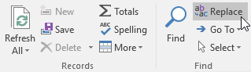
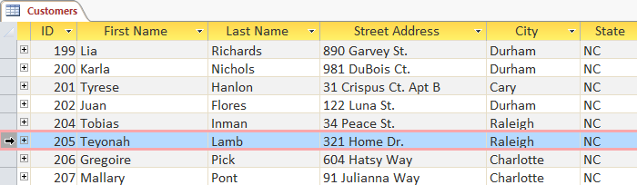
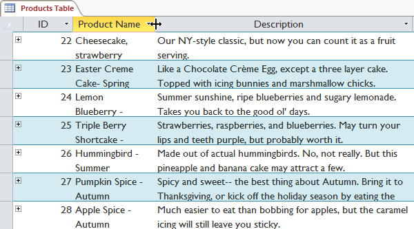
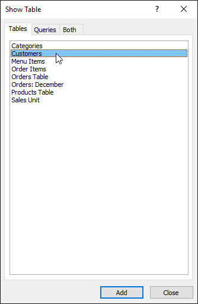
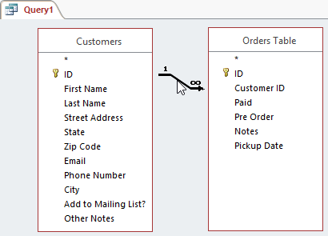
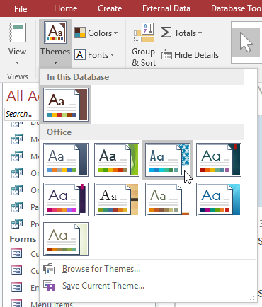
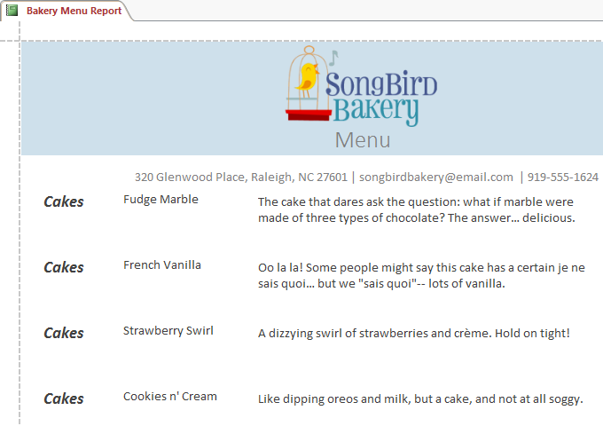
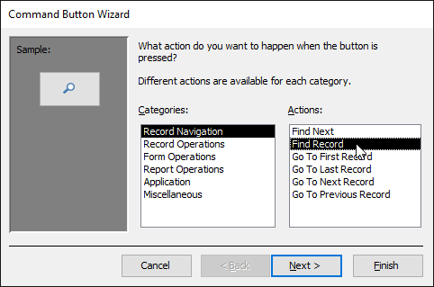

Access
Dalam tutorial gratis ini, pelajari cara memasukkan, mengelola, dan mencari data dalam jumlah besar dalam database Access.
Pelajaran 1: Pengantar Database
Microsoft Access adalah program pembuatan dan pengelolaan basis data. Untuk memahami Access, Anda harus terlebih dahulu memahami database.
Dalam pelajaran ini, Anda akan belajar tentang database dan bagaimana mereka digunakan. Anda akan membiasakan diri dengan perbedaan antara manajemen data di Microsoft Access dan Microsoft Excel. Akhirnya, Anda akan melihat sisa tutorial Access.
Tonton video di bawah ini untuk mempelajari selengkapnya tentang database di Access.
Apa itu basis data?
Sebuah basis data adalah kumpulan data yang disimpan dalam sistem komputer. Basis data memungkinkan penggunanya untuk memasukkan, mengakses, dan menganalisis data mereka dengan cepat dan mudah. Mereka adalah alat yang sangat berguna sehingga Anda selalu melihatnya. Pernah menunggu saat resepsionis dokter memasukkan informasi pribadi Anda ke komputer, atau melihat karyawan toko menggunakan komputer untuk melihat apakah barang tersedia? Jika demikian, maka Anda telah melihat database beraksi.
Cara termudah untuk memahami database adalah dengan menganggapnya sebagai kumpulan daftar. Pikirkan tentang salah satu database yang kami sebutkan di atas: database informasi pasien di kantor dokter. Daftar apa yang terdapat dalam database seperti ini? Untuk mulai dengan, ada daftar nama pasien. Lalu ada daftar janji temu sebelumnya, daftar riwayat kesehatan setiap pasien, daftar informasi kontak, dan seterusnya.
Ini berlaku untuk semua database, dari yang paling sederhana hingga yang paling kompleks. Jika Anda suka memanggang, misalnya, Anda mungkin memutuskan untuk menyimpan database yang berisi jenis cookie yang Anda tahu cara membuatnya dan teman yang Anda beri cookie ini. Ini adalah salah satu database paling sederhana yang bisa dibayangkan. Ini berisi dua daftar: daftar teman Anda, dan daftar cookie.

Namun, jika Anda seorang pembuat roti profesional, Anda akan memiliki lebih banyak daftar untuk dilacak: daftar pelanggan, produk yang dijual, harga, pesanan, dan sebagainya. Semakin banyak daftar yang Anda tambahkan, semakin kompleks databasenya.
Di Access, daftar sedikit lebih rumit daripada yang Anda tulis di atas kertas. Access menyimpan daftar datanya dalam tabel, yang memungkinkan Anda menyimpan informasi yang lebih detail. Pada tabel di bawah, daftar Orang dalam database pembuat roti amatir telah diperluas untuk menyertakan informasi relevan lainnya tentang teman pembuat roti.

Jika Anda sudah familiar dengan program lain di Microsoft Office suite, ini mungkin mengingatkan Anda tentang Excel, yang memungkinkan Anda untuk mengatur data dengan cara yang sama. Bahkan, Anda bisa membuat tabel serupa di Excel.
Mengapa menggunakan basis data?
Jika database pada dasarnya adalah kumpulan daftar yang disimpan dalam tabel dan Anda dapat membuat tabel di Excel, mengapa Anda memerlukan database yang sebenarnya? Meskipun Excel hebat dalam menyimpan dan mengatur angka, Access jauh lebih kuat dalam menangani data non-numerik, seperti nama dan deskripsi. Data non-numerik memainkan peran penting di hampir semua basis data, dan penting untuk dapat menyortir dan menganalisisnya.
Apa yang benar-benar membedakan database dari cara lain untuk menyimpan data adalah konektivitas. Kami menyebut database seperti yang akan Anda gunakan di Access sebagai database relasional. Sebuah database relasional mampu memahami bagaimana daftar dan objek di dalamnya berhubungan satu sama lain. Untuk mengeksplorasi ide ini, mari kembali ke database sederhana dengan dua daftar: nama teman Anda, dan jenis cookie yang Anda tahu cara membuatnya. Anda memutuskan untuk membuat daftar ketiga untuk melacak kumpulan cookie yang Anda buat dan untuk siapa mereka. Karena Anda hanya membuat kue yang Anda tahu resepnya dan Anda hanya akan memberikannya kepada teman-teman Anda, daftar baru ini akan mendapatkan semua informasinya dari daftar yang Anda buat sebelumnya.

Lihat bagaimana daftar ketiga menggunakan kata-kata yang muncul di dua daftar pertama? Basis data mampu memahami bahwa kue Dad dan Oatmeal dalam daftar Batch adalah hal yang sama dengan kue Dad dan Oatmeal dalam dua daftar pertama. Hubungan ini tampak jelas, dan seseorang akan langsung memahaminya; namun, buku kerja Excel tidak.
Excel akan memperlakukan semua hal ini sebagai bagian informasi yang berbeda dan tidak terkait. Di Excel, Anda harus memasukkan setiap informasi tentang seseorang atau tipe cookie setiap kali Anda menyebutkannya karena database tersebut tidak akan bersifat relasional seperti database Access. Sederhananya, database relasional dapat mengenali apa yang dapat dilakukan manusia: Jika kata-kata yang sama muncul dalam beberapa daftar, mereka merujuk pada hal yang sama.
Fakta bahwa database relasional dapat menangani informasi dengan cara ini memungkinkan Anda untuk memasukkan, mencari, dan menganalisis data di lebih dari satu tabel pada satu waktu. Semua hal ini akan sulit dilakukan di Excel, tetapi di Access bahkan tugas yang rumit pun dapat disederhanakan dan dibuat cukup ramah pengguna.
Tentang tutorial Akses
Apa yang diharapkan dari tutorial ini
Tutorial ini tidak akan mengajarkan Anda bagaimana membangun database dari awal. Ini dirancang untuk orang-orang yang berencana menggunakan database yang sudah ada sebelumnya, kemungkinan besar di tempat kerja.
Tutorial dimulai dengan pengenalan dasar untuk Access. Anda akan terbiasa dengan struktur database Access dan mempelajari cara menavigasi berbagai jendela dan objek yang ada di dalamnya. Seiring berjalannya tutorial, Anda akan mempelajari cara memasukkan informasi dalam beberapa cara. Anda juga akan mempelajari cara mengurutkan, mengambil, dan menganalisis informasi ini dengan menjalankan kueri. Setelah Anda memahami cara menggunakan database, Anda akan diperkenalkan dengan alat yang memungkinkan Anda mengubah struktur dan tampilannya.
Pada saat Anda selesai membaca tutorial ini, Anda akan dapat menggunakan database dengan percaya diri. Anda juga harus dapat mengubahnya agar sesuai dengan kebutuhan Anda.
Apakah tutorial ini tepat untuk Anda?
Jika Anda telah membaca deskripsi dan yakin bahwa tutorial ini sesuai dengan kebutuhan Anda, lanjutkan dan lompat. Seperti disebutkan di atas, tutorial ini terutama dirancang untuk mengajari orang cara menggunakan database yang ada. Tetapi apa pun tujuan akhir Anda, itu dapat memberi Anda dasar yang kuat.
Jika Anda berencana membuat sistem untuk melacak informasi pribadi, pertimbangkan apakah Anda memerlukan fungsionalitas penuh Access di database Anda. Meskipun Access adalah alat yang sangat berguna, menyiapkan database baru bisa jadi sulit dan memakan waktu. Jika Anda tidak memerlukan konektivitas penuh dari database relasional, pertimbangkan untuk mengelola informasi Anda dengan Excel. Jika Anda memutuskan untuk membuat database Anda sendiri, tinjau pelajaran kami tentang Merancang Database Anda Sendiri untuk sumber daya tentang pembuatan database.
Pelajaran 2: Pengenalan Objek
pengantar
Database di Access terdiri dari empat objek: tabel, kueri, formulir, dan laporan. Bersama-sama, objek-objek ini memungkinkan Anda untuk memasukkan, menyimpan, menganalisis, dan mengkompilasi data sesuai keinginan Anda.
Dalam pelajaran ini, Anda akan belajar tentang masing-masing dari empat objek dan memahami bagaimana mereka berinteraksi satu sama lain untuk membuat database relasional yang berfungsi penuh.
Tonton video di bawah ini untuk mempelajari selengkapnya tentang objek di Access.
Tabel
Pada titik ini, Anda seharusnya sudah memahami bahwa database adalah kumpulan data yang diatur ke dalam beberapa daftar yang terhubung. Di Access, semua data disimpan dalam tabel, yang berarti tabel adalah jantung dari database apa pun.
Anda juga mungkin sudah tahu bahwa tabel disusun menjadi kolom vertikal dan baris horizontal.

Di Access, baris dan kolom disebut sebagai nbsp; catatan dan bidang. Sebuah lapangan adalah lebih dari sekedar sebuah kolom; ini adalah cara mengatur informasi berdasarkan jenis datanya. Setiap bagian dari informasi dalam bidang adalah dari jenis yang sama. Misalnya, setiap entri di bidang yang disebut Nama Depan akan menjadi nama, dan setiap entri di bidang yang disebut Alamat Jalan akan menjadi alamat.

Demikian juga, catatan lebih dari sekadar baris; itu adalah unit informasi. Setiap sel dalam baris tertentu adalah bagian dari catatan baris itu.
Perhatikan bagaimana setiap record mencakup beberapa bidang. Meskipun informasi dalam setiap record diatur ke dalam field, informasi tersebut termasuk dalam informasi lain dalam record tersebut. Lihat nomor di sebelah kiri setiap baris? Ini adalah nomor ID yang mengidentifikasi setiap catatan. Nomor ID untuk catatan mengacu pada setiap informasi yang terkandung pada baris itu.

Tabel baik untuk menyimpan informasi yang berkaitan erat. Katakanlah Anda memiliki toko roti dan memiliki database yang menyertakan tabel dengan nama dan informasi pelanggan Anda, seperti nomor telepon, alamat rumah, dan alamat email mereka. Karena semua informasi ini adalah detail tentang pelanggan Anda, Anda akan memasukkan semuanya ke dalam tabel yang sama. Setiap pelanggan akan diwakili oleh catatan unik, dan setiap jenis informasi tentang pelanggan ini akan disimpan di bidangnya sendiri. Jika Anda memutuskan untuk menambahkan informasi lagi—misalnya, ulang tahun pelanggan—Anda cukup membuat bidang baru di dalam tabel yang sama.
Formulir, kueri, dan laporan
Meskipun tabel menyimpan semua data Anda, tiga objek lainnya— formulir, kueri, dan laporan —memberi Anda cara untuk bekerja dengannya. Masing-masing objek ini berinteraksi dengan rekaman yang disimpan dalam tabel database Anda.
Formulir
Formulir digunakan untuk memasukkan, mengubah, dan melihat catatan. Anda mungkin harus mengisi formulir di banyak kesempatan, seperti ketika mengunjungi kantor dokter, melamar pekerjaan, atau mendaftar sekolah. Alasan mengapa formulir sering digunakan adalah karena formulir tersebut merupakan cara mudah untuk memandu orang memasukkan data dengan benar. Saat Anda memasukkan informasi ke dalam formulir di Access, data berjalan persis di tempat yang diinginkan desainer database: ke dalam satu atau beberapa tabel terkait.
Formulir memudahkan memasukkan data. Bekerja dengan tabel yang luas dapat membingungkan, dan ketika Anda memiliki tabel yang terhubung, Anda mungkin perlu bekerja dengan lebih dari satu tabel sekaligus untuk memasukkan satu set data. Namun, dengan formulir, Anda dapat memasukkan data ke beberapa tabel sekaligus, semuanya di satu tempat. Perancang basis data bahkan dapat menetapkan batasan pada komponen formulir individual untuk memastikan semua data yang diperlukan dimasukkan dalam format yang benar. Secara keseluruhan, formulir membantu menjaga data tetap konsisten dan terorganisir, yang penting untuk database yang akurat dan kuat.
Pertanyaan
Query adalah cara untuk mencari dan mengkompilasi data dari satu atau lebih tabel. Menjalankan kueri seperti mengajukan pertanyaan mendetail tentang database Anda. Saat Anda membuat kueri di Access, Anda menentukan kondisi pencarian tertentu untuk menemukan data yang Anda inginkan.
Kueri jauh lebih kuat daripada penelusuran sederhana yang mungkin Anda lakukan di dalam tabel. Meskipun penelusuran dapat membantu Anda menemukan nama satu pelanggan di bisnis Anda, Anda dapat menjalankan kueri untuk menemukan nama dan nomor telepon setiap pelanggan yang telah melakukan pembelian dalam seminggu terakhir. Kueri yang dirancang dengan baik dapat memberikan informasi yang mungkin tidak dapat Anda temukan hanya dengan melihat data di tabel Anda.

Laporan
Laporan menawarkan Anda kemampuan untuk menyajikan data Anda dalam bentuk cetak. Jika Anda pernah menerima cetakan komputer dari jadwal kelas atau faktur pembelian yang dicetak, Anda telah melihat laporan database. Laporan berguna karena memungkinkan Anda menyajikan komponen database dalam format yang mudah dibaca. Anda bahkan dapat menyesuaikan tampilan laporan agar menarik secara visual. Access menawarkan Anda kemampuan untuk membuat laporan dari tabel atau kueri apa pun.

Menyatukan semuanya
Bahkan jika Anda memiliki gagasan yang baik tentang bagaimana setiap objek dapat digunakan, pada awalnya mungkin sulit untuk memahami bagaimana mereka semua bekerja bersama. Ini membantu untuk mengingat bahwa mereka semua bekerja dengan data yang sama. Setiap bagian data yang digunakan kueri, formulir, atau laporan disimpan di salah satu tabel database Anda.

Formulir memungkinkan Anda untuk menambahkan data ke tabel dan melihat data yang sudah ada. Laporan menyajikan data dari tabel dan juga dari kueri, yang kemudian mencari dan menganalisis data dalam tabel yang sama ini.
Hubungan ini terdengar rumit, tetapi sebenarnya mereka bekerja sama dengan sangat baik dan alami sehingga kita sering tidak menyadarinya saat kita menggunakan objek database yang terhubung. Pernahkah Anda menggunakan katalog kartu elektronik untuk mencari buku di perpustakaan? Kemungkinannya adalah, Anda memasukkan pencarian Anda ke dalam sesuatu yang terlihat seperti ini:

Saat melakukan penelusuran, Anda memasukkan istilah penelusuran ke dalam formulir yang kemudian membuat dan menjalankan kueri berdasarkan permintaan Anda. Saat kueri selesai menelusuri tabel database untuk catatan yang cocok dengan penelusuran Anda, Anda diperlihatkan laporan yang mengambil informasi dari kueri dan tabel terkait—dalam hal ini, daftar buku yang cocok dengan istilah penelusuran Anda. Anda dapat merepresentasikan hubungan antara objek seperti ini:
Katakanlah alih-alih menggunakan alat ini, Anda harus mencari di dalam tabel raksasa yang berisi setiap buku di sistem perpustakaan. Catatan yang relevan kemungkinan akan tersebar di banyak tabel: tabel untuk judul dan deskripsi buku, tabel yang berisi informasi tentang buku mana yang diperiksa masuk atau keluar, dan tabel dengan setiap cabang perpustakaan, hanya untuk beberapa nama.
Anda harus mencari setidaknya tiga meja hanya untuk menemukan sebuah buku, mempelajari lokasinya, dan melihat apakah buku itu sudah check-in! Sangat mudah untuk membayangkan betapa sulitnya menemukan buku yang tepat. Jika Anda tidak berhati-hati, Anda bahkan mungkin mengacaukan sesuatu dengan menghapus atau mengedit rekaman secara tidak sengaja. Sangat mudah untuk melihat bagaimana objek database membuat pencarian ini jauh lebih mudah dikelola.
Dalam pelajaran Pengenalan Basis Data kami, kami membahas konsep basis data relasional, yang merupakan basis data yang mampu memahami bagaimana kumpulan data yang berbeda berhubungan satu sama lain. Situasi seperti contoh di atas adalah alasan mengapa orang menganggap database relasional sangat berguna. Tanpa database relasional, apa yang seharusnya menjadi tugas sederhana—mencari sebuah buku dan melihat apakah buku tersebut telah didaftarkan dan di mana—menjadi sangat rumit dan memakan waktu. Mengetahui cara menggunakan empat objek Access dapat membuat tugas yang rumit menjadi lebih ramah pengguna.
Pelajaran 3: Memulai di Access
pengantar
Setiap kali Anda mempelajari program baru, penting untuk membiasakan diri dengan jendela program dan alat-alat di dalamnya. Bekerja dengan Access tidak berbeda. Mengetahui jalan Anda di sekitar lingkungan Access akan membuat belajar dan menggunakan Access lebih mudah.
Dalam pelajaran ini, Anda akan membiasakan diri dengan lingkungan Access, termasuk Ribbon, Backstage view, Navigation pane, dan Document Tabs bar. Anda juga akan mempelajari cara menavigasi dengan formulir navigasi jika database Anda menyertakannya.
Sepanjang tutorial ini, kita akan menggunakan database sampel. Jika Anda ingin mengikuti, Anda harus mengunduh database sampel Access kami. Anda harus menginstal Access di komputer Anda untuk membuka contoh.
Tonton video di bawah ini untuk mempelajari selengkapnya tentang memulai di Access.
Mengenal Akses
Access menggunakan Ribbon untuk mengatur perintah. Jika Anda baru menggunakan Access atau memiliki lebih banyak pengalaman dengan versi yang lebih lama, Anda harus meluangkan waktu terlebih dahulu untuk terbiasa dengan antarmuka Access.

Bekerja di lingkungan Access Anda
Access menggunakan fitur seperti Ribbon dan Quick Access Toolbar —tempat Anda akan menemukan perintah untuk melakukan tugas umum di Access—serta tampilan Backstage.
Ribbon
Access menggunakan sistem ribbon tab alih-alih menu tradisional. Ribbon berisi beberapa tab, masing-masing dengan beberapa kelompok perintah. Misalnya, grup Clipboard pada tab Beranda berisi perintah Potong, Salin, dan Tempel.
Beberapa grup juga memiliki panah kecil di sudut kanan bawah yang dapat Anda klik untuk opsi lainnya.

Untuk meminimalkan dan memaksimalkan Ribbon:
Ribbon dirancang untuk menanggapi tugas Anda saat ini; namun, Anda dapat memilih untuk meminimalkan Ribbon jika ternyata terlalu banyak memakan ruang layar.
- Klik panah di sudut kanan bawah Ribbon untuk meminimalkannya.
- The Ribbon akan diminimalkan. Klik tab untuk membuat Ribbon muncul kembali. Ini akan hilang lagi saat tidak digunakan.
- Untuk memaksimalkan Ribbon, klik tab, lalu klik ikon pin di pojok kanan bawah. Ribbon akan muncul setiap saat.
Menggunakan fitur Beri tahu saya
Jika Anda kesulitan menemukan perintah yang Anda inginkan, fitur Beri tahu saya dapat membantu. Ini berfungsi seperti bilah pencarian biasa: Ketik apa yang Anda cari, dan daftar opsi akan muncul. Anda kemudian dapat menggunakan perintah langsung dari menu tanpa harus menemukannya di Ribbon.

Bilah Alat Akses Cepat
The Quick Access Toolbar, terletak di atas Ribbon, memungkinkan Anda mengakses perintah umum yang tidak peduli tab Anda berada. Secara default, ini menunjukkan perintah Save, Undo, dan Redo. Jika mau, Anda dapat menyesuaikannya dengan menambahkan perintah tambahan.

Perhatikan bahwa perintah Simpan hanya menyimpan objek terbuka saat ini. Selain itu, perintah Undo tidak akan membatalkan tindakan tertentu, seperti menambahkan record. Perhatikan baik-baik informasi Anda saat menggunakan perintah Undo untuk memastikannya memiliki efek yang diinginkan.
Tampilan belakang panggung
Tampilan Backstage memberi Anda berbagai opsi untuk menyimpan, membuka, dan mencetak database Anda.
Untuk mengakses tampilan Backstage:
- Klik tab File pada Ribbon.
- Tampilan belakang panggung akan muncul.
Klik tombol di interaktif di bawah ini untuk mempelajari lebih lanjut tentang menggunakan tampilan Backstage.

Panel Navigasi
The panel Navigasi adalah daftar yang berisi setiap objek dalam database Anda. Untuk melihat lebih mudah, objek diatur ke dalam kelompok berdasarkan jenis. Anda dapat membuka, mengganti nama, dan menghapus objek menggunakan panel Navigasi.

Untuk meminimalkan dan memaksimalkan panel Navigasi:
Panel Navigasi dirancang untuk membantu Anda mengelola semua objek Anda; namun, jika Anda merasa itu memakan terlalu banyak ruang layar, Anda dapat meminimalkannya.
- Untuk meminimalkan panel Navigasi, klik panah ganda di sudut kanan atas.
- Panel Navigasi akan diminimalkan. Klik panah ganda lagi untuk memaksimalkannya.
Jika Anda ingin membuat panel Navigasi lebih kecil tanpa meminimalkan sepenuhnya, Anda dapat mengubah ukurannya. Cukup klik dan seret batas kanan panel Navigasi. Ketika itu adalah ukuran yang diinginkan, lepaskan mouse Anda.
Menyortir objek di panel Navigasi
Secara default, objek diurutkan menurut tipe, dengan tabel dalam satu grup, formulir di grup lain, dan seterusnya. Namun, jika mau, Anda bisa mengurutkan objek di panel Navigasi ke dalam grup pilihan Anda. Ada empat opsi pengurutan:
- Kustom memungkinkan Anda membuat grup kustom untuk menyortir objek. Setelah menerapkan pengurutan, cukup seret objek yang diinginkan ke grup baru.
- Tipe Objek mengelompokkan objek menurut tipenya. Ini adalah pengaturan default.
- Tabel dan Tampilan Terkait mengelompokkan formulir, kueri, dan laporan dengan tabel yang dirujuk.
- Tanggal Dibuat atau Tanggal Modifikasi mengurutkan objek berdasarkan kapan objek tersebut dibuat atau terakhir diedit.
Untuk mengurutkan objek di panel Navigasi:
- Klik panah drop-down di sebelah kanan All Access Objects, lalu pilih jenis yang diinginkan dari menu drop-down.
- Objek di panel Navigasi sekarang akan diurutkan untuk mencerminkan pilihan Anda.
Untuk mengkustomisasi lebih lanjut tampilan panel Navigasi, Anda bisa meminimalkan grup objek yang tidak ingin Anda lihat. Cukup klik panah ganda ke atas di sebelah nama grup. Untuk menampilkan grup, klik panah ganda ke bawah .

Basis data dengan formulir navigasi
Beberapa database menyertakan formulir navigasi yang terbuka secara otomatis saat database dibuka. Bentuk navigasi dirancang untuk menjadi user-friendly penggantian panel navigasi. Mereka berisi tab yang memungkinkan Anda untuk melihat dan bekerja dengan formulir, kueri, dan laporan umum. Memiliki objek yang sering digunakan tersedia untuk Anda di satu tempat memungkinkan Anda mengaksesnya dengan cepat dan mudah.
Untuk membuka objek dari formulir navigasi, klik tabnya. Objek akan ditampilkan dalam formulir navigasi. Setelah sebuah objek terbuka, Anda dapat bekerja dengannya seperti biasa. Pada contoh di bawah, formulir navigasi memiliki tab di dekat kiri atas untuk pesanan, pelanggan, dan item menu, dan masing-masing akan membuka objek yang sesuai.
Umumnya, formulir navigasi hanya menyertakan objek yang dibutuhkan pengguna biasa untuk bekerja dengan cukup teratur, itulah sebabnya formulir navigasi Anda mungkin tidak menyertakan setiap formulir, kueri, atau laporan. Ini membuatnya lebih mudah untuk menavigasi database. Dengan menyembunyikan tabel dan formulir, kueri, dan laporan yang jarang digunakan, ini juga mengurangi kemungkinan database dirusak oleh pengguna yang secara tidak sengaja mengedit atau menghapus data yang diperlukan.
Untuk alasan ini, penting untuk bertanya kepada desainer atau administrator database Anda sebelum bekerja dengan objek yang tidak tersedia di formulir navigasi Anda. Setelah Anda memiliki persetujuan, Anda dapat memaksimalkan yang panel Navigasi dan membuka objek dari sana.
Latihan!
- Buka database latihan kami.
- Klik semua tab, dan perhatikan bagaimana opsi pada Ribbon berubah.
- Minimalkan Ribbon, lalu Maksimalkan lagi.
- Ubah ukuran panel Navigasi agar tidak memakan banyak ruang.
- Urutkan ulang objek di panel Navigasi.
Pelajaran 4: Mengelola Database dan Objek
pengantar
Setiap database Access terdiri dari beberapa objek yang memungkinkan Anda berinteraksi dengan data. Basis data dapat mencakup formulir untuk memasukkan data, kueri untuk mencari di dalamnya, laporan untuk menganalisisnya, dan tabel untuk menyimpannya. Setiap kali Anda bekerja dengan database Anda, Anda bekerja dengan banyak objek ini sekaligus. Untungnya, Access membuat pengelolaan objek ini cukup sederhana.
Dalam pelajaran ini, Anda akan belajar cara membuka dan menutup database, serta cara membuka, menutup, dan menyimpan objek.
Sepanjang tutorial ini, kita akan menggunakan database sampel. Jika Anda ingin mengikuti, Anda harus mengunduh database sampel Access kami. Anda harus menginstal Access di komputer Anda untuk membuka contoh.
Tonton video di bawah ini untuk mempelajari selengkapnya tentang mengelola database dan objek di Access.
Untuk membuka database yang ada:
Sebelum memasukkan data atau memodifikasi objek, Anda harus membuka database Anda.
- Pilih tab File untuk pergi ke tampilan Backstage.

- Klik Buka.
- Klik Jelajahi.
- Kotak dialog Buka akan muncul. Cari dan pilih database, lalu klik Open.

- Satu atau beberapa pesan peringatan mungkin muncul saat Anda membuka database Anda. Jika database berisi fungsi yang disesuaikan, bilah kuning dengan peringatan keamanan mungkin muncul di bawah Ribbon. Jika Anda mempercayai sumber database Anda, klik Aktifkan Konten agar database Anda ditampilkan dengan benar.

- Setelah mengaktifkan semua konten dalam database, Anda mungkin melihat pesan yang menanyakan apakah Anda ingin menjadikan database sebagai Dokumen Tepercaya. Klik Ya jika Anda ingin semua konten diaktifkan secara otomatis setiap kali Anda membuka database.
Anda mungkin juga diminta untuk masuk ke database. Pilih nama Anda dari daftar login. Jika nama Anda tidak muncul, klik Tambah Pengguna untuk memasukkan informasi Anda.
Untuk menutup database:
- Pilih tab File untuk pergi ke tampilan Backstage.
- Pilih Tutup.
- Jika Anda memiliki objek yang belum disimpan, kotak dialog akan muncul untuk setiap objek yang menanyakan apakah Anda ingin menyimpannya. Pilih Ya untuk menyimpan objek, Tidak untuk menutupnya tanpa menyimpan, atau Batal untuk membiarkan database Anda terbuka.
Bekerja dengan objek
Akan sangat membantu jika Anda menganggap database Anda sebagai folder atau map besar tempat data Anda disimpan. Data itu sendiri terkandung dalam objek database. Access memperlakukan setiap objek ini sebagai dokumen terpisah, yang berarti Anda harus membuka dan menyimpannya satu per satu agar dapat bekerja dengannya.
Anda mungkin telah memperhatikan bahwa pelajaran ini tidak berisi instruksi untuk menyimpan database. Ini karena Anda tidak dapat menyimpan seluruh database sekaligus. Sebagai gantinya, Anda harus menyimpan objek yang ada di dalam database satu per satu.
Untuk membuka objek:
- Di panel Navigasi, temukan dan klik dua kali objek yang diinginkan.
- Objek akan muncul sebagai tab di bilah Tab Dokumen.
Secara default, objek yang paling baru dibuka akan muncul di jendela utama sebagai objek saat ini. Untuk melihat objek lain yang terbuka, klik tabnya di bilah Tab Dokumen.

Menyimpan objek
Anda harus menyimpan perubahan apa pun yang Anda buat pada setiap objek sebelum menutup database Anda. Ingat, menabung lebih awal dan sering dapat mencegah pekerjaan Anda hilang. Namun, Anda juga akan diminta untuk menyimpan pekerjaan yang belum disimpan ketika Anda mencoba untuk menutup database Anda.
Untuk menyimpan objek baru:
- Pilih objek yang ingin Anda simpan dengan mengklik tabnya di bilah Tab Dokumen.
- Klik perintah Save pada Quick Access Toolbar, atau tekan Ctrl+S pada keyboard Anda.

- Saat pertama kali Anda menyimpan objek, Anda akan diminta untuk menamainya. Masukkan nama objek yang diinginkan, lalu klik OK.

- Objek akan disimpan. Klik perintah Save lagi untuk menyimpan perubahan apa pun pada objek.
Untuk menutup objek:
- Pilih objek yang ingin Anda tutup, lalu klik X di sebelah kanan bilah Tab Dokumen.
- Jika ada perubahan yang belum disimpan pada objek, Anda akan diminta untuk menyimpannya. Pilih Ya untuk menyimpan, Tidak untuk menutupnya tanpa menyimpan perubahan Anda, dan Batal untuk membiarkan objek terbuka.
Anda juga dapat menutup objek dengan mengklik kanan tabnya pada bilah Tab Dokumen dan memilih Tutup. Pilih Tutup Semua untuk menutup semua objek yang terbuka.

Untuk mengganti nama objek:
- Jika objek yang ingin Anda ganti namanya terbuka, tutup.
- Di panel Navigasi, klik kanan objek yang diinginkan, lalu pilih Ganti Nama.

- Ketik nama objek baru, lalu tekan Enter pada keyboard Anda.

Latihan!
- Buka database latihan kami.
- Buka sebuah objek.
- Tutup objek.
- Ganti nama objek.
- Tutup database tanpa menyimpan perubahan Anda.
Pelajaran 5: Bekerja dengan Tabel
pengantar
Meskipun ada empat jenis objek database di Access, tabel bisa dibilang yang paling penting. Bahkan saat Anda menggunakan formulir, kueri, dan laporan, Anda masih bekerja dengan tabel karena di sanalah semua data Anda disimpan. Tabel adalah jantung dari basis data apa pun, jadi penting untuk memahami cara menggunakannya.
Dalam pelajaran ini, Anda akan belajar cara membuka tabel, membuat dan mengedit catatan, dan memodifikasi tampilan tabel Anda agar lebih mudah dilihat dan dikerjakan.
Sepanjang tutorial ini, kita akan menggunakan database sampel. Jika Anda ingin mengikuti, Anda harus mengunduh database sampel Access kami. Anda harus menginstal Access di komputer Anda untuk membuka contoh.
Tonton video di bawah ini untuk mempelajari selengkapnya tentang bekerja dengan tabel di Access.
Dasar-dasar tabel
Untuk membuka tabel yang ada:
- Buka database Anda dan temukan panel Navigasi.
- Di panel Navigasi, temukan tabel yang ingin Anda buka.
- Klik dua kali tabel yang diinginkan.
- Tabel akan terbuka dan muncul sebagai tab di bilah Tab Dokumen.
Memahami tabel
Semua tabel terdiri dari baris horizontal dan kolom vertikal, dengan persegi panjang kecil yang disebut sel di tempat perpotongan baris dan kolom. Di Access, baris dan kolom disebut sebagai catatan dan bidang.
Sebuah lapangan adalah cara mengorganisir informasi dengan jenis. Pikirkan nama bidang sebagai pertanyaan dan setiap sel di dalam bidang itu sebagai respons terhadap pertanyaan itu. Dalam contoh kami, bidang Nama Belakang dipilih, yang berisi semua nama belakang dalam tabel.
Sebuah catatan adalah satu unit informasi. Setiap sel pada baris tertentu adalah bagian dari catatan baris itu. Dalam contoh kami, catatan Quinton Boyd dipilih, yang berisi semua informasi yang terkait dengannya dalam tabel.
Setiap catatan memiliki nomor ID sendiri. Dalam sebuah tabel, setiap nomor ID unik untuk catatannya dan mengacu pada semua informasi dalam catatan itu. Nomor ID untuk catatan tidak dapat diubah.
Setiap sel data dalam tabel Anda adalah bagian dari bidang dan catatan. Misalnya, jika Anda memiliki tabel nama dan informasi kontak, setiap orang akan diwakili oleh catatan, dan setiap informasi tentang setiap orang—nama, nomor telepon, alamat, dan sebagainya—akan dimasukkan ke dalam bidang yang berbeda. pada baris rekaman itu.
Klik tombol di interaktif di bawah ini untuk mempelajari cara menavigasi tabel.

Menavigasi dalam tabel
Bilah di bagian bawah tabel berisi beberapa perintah untuk membantu Anda mencari atau menggulir rekaman:
- Untuk menavigasi rekaman dalam tabel, Anda dapat menggunakan tombol panah atas dan bawah, gulir ke atas dan ke bawah, atau gunakan panah di bilah Navigasi Rekam yang terletak di bagian bawah tabel Anda.
- Anda dapat membuat catatan baru dengan perintah catatan baru (kosong) pada bilah Navigasi Rekam.
- Anda dapat menemukan catatan apa pun di tabel yang saat ini terbuka dengan mencarinya menggunakan kotak pencarian catatan. Tempatkan kursor Anda di kotak pencarian, ketik kata apa pun yang muncul di catatan yang ingin Anda temukan, dan tekan tombol Enter.
Untuk menavigasi antar bidang, Anda dapat menggunakan tombol panah kiri dan kanan atau menggulir ke kiri dan kanan.
Menambahkan catatan dan memasukkan data
Memasukkan data ke dalam tabel di Access mirip dengan memasukkan data di Excel. Untuk bekerja dengan record, Anda harus memasukkan data ke dalam sel. Jika Anda memerlukan bantuan memasukkan data ke dalam catatan, Anda mungkin ingin meninjau pelajaran Dasar Sel kami dari tutorial Excel kami.
Untuk menambahkan catatan baru:
Ada tiga cara untuk menambahkan catatan baru ke tabel:
- Di grup Records pada tab Home, klik perintah New.
- Pada bilah Rekam Navigasi di bagian bawah jendela, klik tombol Rekam baru.
- Mulailah mengetik di baris di bawah catatan terakhir Anda yang ditambahkan.
Terkadang saat Anda memasukkan informasi ke dalam catatan, sebuah jendela akan muncul untuk memberi tahu Anda bahwa informasi yang Anda masukkan tidak valid. Ini berarti bidang yang Anda kerjakan memiliki aturan validasi, yaitu aturan tentang tipe data yang bisa muncul di bidang itu. Klik OK, lalu ikuti petunjuk di jendela pop-up untuk memasukkan kembali data Anda.
Untuk menyimpan catatan:
Access dirancang untuk menyimpan catatan secara otomatis. Setelah memasukkan rekaman, Anda dapat memilih rekaman yang berbeda atau menutup objek, dan Access akan menyimpan rekaman tersebut. Namun, dalam situasi tertentu Anda banyak yang ingin menyimpan catatan secara manual. Misalnya, jika Anda perlu mengedit rekaman yang sudah ada, Anda bisa menyimpan rekaman untuk memastikan perubahan Anda disimpan.
- Pilih tab Beranda dan temukan grup Rekaman.
- Klik perintah Simpan. Catatan akan disimpan.
Mengedit catatan
Untuk mengedit rekaman apa pun dalam tabel dengan cepat, Anda dapat mengkliknya dan mengetikkan perubahan Anda. Access juga memungkinkan Anda menemukan dan mengganti kata dalam beberapa catatan dan menghapus catatan seluruhnya.
Untuk mengganti kata dalam catatan:
Anda dapat mengedit beberapa kemunculan kata yang sama dengan menggunakan Temukan dan Ganti, yang mencari istilah dan menggantinya dengan istilah lain.
- Pilih tab Beranda dan temukan grup Temukan.
- Pilih perintah Ganti. The Cari dan Ganti kotak dialog akan muncul.

- Di bidang Temukan Apa :, ketikkan kata yang ingin Anda temukan, lalu di bidang Ganti Dengan: ketikkan kata yang ingin Anda ganti dengan kata aslinya. Dalam contoh kita, kita akan menemukan contoh kata Fall dan menggantinya dengan Autumn.
- Klik panah drop-down Look In: untuk memilih area yang ingin Anda cari. Pilih Bidang saat ini untuk membatasi pencarian Anda ke bidang yang saat ini dipilih. Pilih dokumen saat ini untuk mencari di dalam seluruh tabel.
- Klik panah tarik-turun Cocokkan: untuk memilih seberapa mirip hasil yang Anda inginkan dengan penelusuran Anda. Pilih Setiap Bagian Bidang untuk mencari istilah pencarian Anda di bagian mana pun dari sel. Pilih Seluruh Bidang untuk mencari hanya sel yang sama persis dengan istilah pencarian Anda. Pilih Mulai Bidang untuk mencari hanya sel yang dimulai dengan istilah pencarian Anda.
- Klik Temukan Berikutnya. Jika teks ditemukan, itu akan dipilih.
- Tinjau teks untuk memastikan Anda ingin menggantinya. Klik Ganti untuk mengganti kata asli dengan yang baru.
- Access akan berpindah ke contoh teks berikutnya dalam objek. Ketika Anda selesai mengganti teks, klik Batal untuk menutup kotak dialog.
Opsi Ganti Semua sangat kuat, tetapi sebenarnya dapat mengubah beberapa hal yang tidak ingin Anda ubah. Pada contoh di bawah, kata musim gugur tidak mengacu pada musim, jadi menggantinya dengan Musim Gugur tidak tepat. Menggunakan opsi Ganti normal memungkinkan Anda memeriksa setiap contoh sebelum mengganti teks. Anda dapat mengklik Temukan Berikutnya untuk melompat ke contoh berikutnya tanpa mengganti teks.
Untuk menghapus catatan:
- Pilih seluruh catatan dengan mengklik batas abu - abu di sisi kiri catatan.

- Pilih tab Beranda dan temukan grup Rekaman.
- Klik perintah Hapus.
- Sebuah kotak dialog akan muncul. Klik Ya.
- Catatan akan dihapus secara permanen.
Nomor ID yang ditetapkan ke rekaman tetap sama bahkan setelah Anda menghapus rekaman. Misalnya, jika Anda menghapus catatan ke-205 dalam sebuah tabel, urutan nomor ID catatan akan membaca... 204, 206, 207... daripada... 204, 205 , 206, 207...
Memodifikasi tampilan tabel
Access menawarkan berbagai cara untuk mengubah tampilan tabel, termasuk mengubah ukuran bidang dan baris dan menyembunyikan sementara informasi yang tidak perlu Anda lihat. Perubahan ini bukan hanya tentang membuat tabel Anda terlihat bagus; mereka juga dapat membuat tabel lebih mudah dibaca.
Tonton video di bawah ini untuk mempelajari lebih lanjut tentang menyesuaikan tabel.
Mengubah ukuran bidang dan baris
Jika bidang dan baris Anda terlalu kecil atau besar untuk data yang ada di dalamnya, Anda selalu dapat mengubah ukurannya sehingga semua teks ditampilkan.
Untuk mengubah ukuran bidang:
- Tempatkan kursor Anda di atas garis kisi kanan di judul bidang. Mouse Anda akan menjadi panah ganda.

- Klik dan seret garis kisi ke kanan untuk menambah lebar bidang atau ke kiri untuk mengurangi lebar bidang, lalu lepaskan mouse. Lebar bidang akan diubah.
Untuk mengubah ukuran baris:
- Tempatkan kursor Anda di atas garis kisi bawah di area abu - abu di sebelah kiri baris. Mouse Anda akan menjadi panah ganda.
- Klik dan seret garis kisi ke bawah untuk menambah tinggi baris atau ke atas untuk mengurangi tinggi baris, lalu lepaskan mouse. Tinggi baris akan diubah.
Menyembunyikan bidang
Jika Anda memiliki bidang yang tidak Anda rencanakan untuk diedit atau tidak ingin diedit orang lain, Anda dapat menyembunyikannya. Bidang tersembunyi tidak terlihat tetapi masih menjadi bagian dari database Anda. Data dalam bidang tersembunyi masih dapat diakses dari formulir, kueri, laporan, dan tabel terkait apa pun.
Untuk menyembunyikan bidang:
- Klik kanan judul bidang, lalu pilih Sembunyikan Bidang.
- Bidang akan disembunyikan.
Jika Anda memutuskan ingin bidang tersebut terlihat lagi, Anda dapat memperlihatkannya. Cukup klik kanan judul bidang apa pun, lalu pilih Perlihatkan Bidang. Sebuah kotak dialog akan muncul. Klik kotak centang pada bidang mana pun yang ingin Anda tampilkan lagi, lalu klik Tutup.
Opsi pemformatan tabel
Warna baris alternatif
Secara default, latar belakang setiap baris lainnya dalam tabel Access beberapa tingkat lebih gelap dari latar belakang tabel lainnya. Warna baris alternatif yang lebih gelap ini membuat tabel Anda lebih mudah dibaca dengan menawarkan perbedaan visual antara setiap record dan record langsung di atas dan di bawahnya.
Untuk mengubah warna baris alternatif:
- Pilih tab Beranda, temukan grup Pemformatan Teks, dan klik panah drop-down Warna Baris Alternatif.
- Pilih warna dari menu tarik-turun, atau pilih Tanpa Warna untuk menghapus warna baris alternatif.
- Warna baris alternatif akan diperbarui.
Memodifikasi garis kisi
Cara lain Access membuat tabel Anda lebih mudah dibaca adalah dengan menambahkan garis kisi yang menandai batas setiap sel. Garis kisi adalah garis tipis yang muncul di antara setiap sel, baris, dan kolom tabel Anda. Secara default, garis kisi berwarna abu-abu gelap dan muncul di setiap sisi sel, tetapi Anda dapat mengubah warnanya dan menyembunyikan garis kisi yang tidak diinginkan.
Untuk menyesuaikan garis kisi mana yang muncul:
- Pilih tab Home, cari grup Text Formatting, dan klik panah drop-down Gridlines.
- Pilih garis kisi yang ingin Anda tampilkan. Anda dapat memilih untuk memiliki garis kisi horizontal di antara baris, garis kisi vertikal di antara kolom , kedua jenis garis kisi, atau tidak sama sekali.
- Garis kisi di meja Anda akan diperbarui.
Opsi pemformatan tambahan
Untuk melihat opsi pemformatan tambahan, klik panah Pemformatan Lembar Data di sudut kanan bawah grup Pemformatan Teks.
Kotak dialog Pemformatan Lembar Data menawarkan beberapa opsi pemformatan tingkat lanjut, termasuk kemampuan untuk mengubah warna latar belakang, warna garis kisi, dan gaya batas dan garis. Ini bahkan mencakup kemampuan untuk melihat tabel sampel dengan pilihan pemformatan Anda, jadi bermain-mainlah dengan berbagai opsi pemformatan hingga tabel Anda terlihat seperti yang Anda inginkan.
Latihan!
- Buka database latihan kami.
- Buka tabel Pelanggan.
- Tambahkan catatan baru ke tabel. Pastikan untuk memasukkan data untuk setiap bidang.
- Temukan record dengan nama Sula Smart, lalu ganti dengan nama pilihan Anda.
- Sembunyikan bidang, lalu perlihatkan.
- Ubah warna baris alternatif.
Pelajaran 6: Bekerja dengan Formulir
pengantar
Meskipun Anda selalu dapat memasukkan data langsung ke tabel database, Anda mungkin merasa lebih mudah menggunakan
formulir. Formulir memastikan Anda memasukkan data yang benar di lokasi dan format yang tepat. Ini dapat membantu menjaga database Anda akurat dan konsisten.
Pelajaran ini akan membahas manfaat menggunakan formulir dalam database. Anda akan meninjau contoh berbagai bentuk dan komponen formulir. Terakhir, Anda akan mempelajari cara
menggunakan
formulir untuk memasukkan catatan baru dan
melihat serta mengedit
yang sudah ada.
Sepanjang tutorial ini, kita akan menggunakan database sampel. Jika Anda ingin mengikuti, Anda harus mengunduh database sampel Access kami. Anda harus menginstal Access di komputer Anda untuk membuka contoh.
Tonton video di bawah ini untuk mempelajari selengkapnya tentang bekerja dengan formulir di Access.
Mengapa menggunakan formulir?
Banyak dari kita mengisi formulir begitu sering sehingga kita hampir tidak menyadari ketika kita diminta untuk menggunakannya. Formulir sangat populer karena berguna bagi orang yang meminta informasi dan orang yang memberikannya. Mereka adalah cara meminta informasi dalam format tertentu, yang berarti orang yang mengisi formulir tahu persis informasi mana yang harus disertakan dan di mana harus meletakkannya.
Ini juga berlaku untuk formulir di Access. Saat Anda memasukkan informasi ke dalam formulir di Access, data berjalan persis di tempat yang seharusnya: ke dalam satu atau beberapa tabel terkait. Meskipun memasukkan data ke dalam tabel sederhana cukup mudah, entri data menjadi lebih rumit saat Anda mulai mengisi tabel dengan catatan dari tempat lain dalam database. Misalnya, tabel Pesanan di database toko roti mungkin tertaut ke informasi tentang pelanggan, produk, dan harga yang diambil dari tabel terkait. Misalnya, dalam tabel Pesanan di bawah bidang ID Pelanggan ditautkan ke tabel Pelanggan.
Bahkan, untuk melihat seluruh pesanan, Anda juga harus melihat tabel Item Pesanan, di mana item menu yang menyusun setiap pesanan dicatat.
Catatan dalam tabel ini termasuk nomor ID catatan dari tabel lain. Anda tidak dapat belajar banyak hanya dengan melihat catatan-catatan ini karena nomor ID tidak memberi tahu Anda banyak tentang data yang terkait dengannya. Selain itu, karena Anda harus melihat dua tabel hanya untuk melihat satu urutan, Anda mungkin akan kesulitan menemukan data yang tepat. Sangat mudah untuk melihat bagaimana melihat atau memasukkan beberapa catatan dengan cara ini bisa menjadi tugas yang sulit dan membosankan.
Formulir yang berisi data yang sama mungkin terlihat seperti ini:
Seperti yang Anda lihat, catatan ini jauh lebih mudah dipahami jika dilihat dalam bentuk. Memodifikasi catatan juga akan lebih mudah karena Anda tidak perlu mengetahui nomor ID untuk memasukkan data baru. Saat Anda menggunakan formulir, Anda tidak perlu khawatir tentang memasukkan data ke dalam tabel yang benar atau dalam format yang tepat karena formulir dapat menangani hal-hal ini sendiri. Tidak perlu bolak-balik antar tabel karena formulir menyatukan semua informasi yang Anda butuhkan di satu tempat.
Formulir tidak hanya membuat proses entri data lebih mudah bagi pengguna, tetapi juga menjaga database itu sendiri bekerja dengan lancar. Dengan formulir, desainer database dapat mengontrol dengan tepat bagaimana pengguna dapat berinteraksi dengan database. Mereka bahkan dapat menetapkan batasan pada masing-masing komponen formulir untuk memastikan semua data yang diperlukan dimasukkan dan semuanya dimasukkan dalam format yang valid. Ini berguna karena menjaga data tetap konsisten dan terorganisir sangat penting untuk database yang akurat dan kuat.
Bekerja dengan formulir
Untuk membuka formulir yang ada:
- Buka database Anda dan temukan panel Navigasi.
- Di panel Navigasi, temukan formulir yang ingin Anda buka.
- Klik dua kali formulir yang diinginkan.
- Ini akan terbuka dan muncul sebagai tab di bilah Tab Dokumen.
Memasukkan dan mengubah data
Bergantung pada database yang Anda gunakan, formulir yang Anda gunakan mungkin menyertakan alat dan fitur khusus yang memungkinkan Anda melakukan tugas umum dengan satu klik tombol. Anda akan melihat contoh alat ini dalam interaktif nanti dalam pelajaran ini. Namun, apa pun jenis formulir yang Anda gunakan, Anda dapat mengikuti prosedur yang sama untuk melakukan tugas dasar tertentu.
Untuk menambahkan catatan baru:
Ada dua cara untuk menambahkan catatan baru ke formulir:
- Di grup Records pada tab Home pada Ribbon, klik perintah New.

- Pada bilah Rekam Navigasi di bagian bawah jendela, klik tombol Rekam Baru.
Untuk menemukan rekaman yang ada untuk dilihat atau diedit:
Ada dua cara untuk menemukan dan melihat rekaman yang ada menggunakan formulir, dan keduanya menggunakan bilah Navigasi di bagian bawah layar:
- Untuk melihat rekaman satu per satu, klik panah navigasi. Panah kanan akan membawa Anda ke rekaman berikutnya, dan panah kiri akan membawa Anda ke rekaman sebelumnya.
- Untuk mencari catatan, ketikkan kata yang Anda tahu terkandung dalam catatan itu di kotak pencarian navigasi.
Untuk menyimpan catatan saat ini:
- Pilih tab Beranda dan temukan grup Rekaman.
- Klik perintah Simpan. Catatan saat ini akan disimpan.

Untuk menghapus rekaman saat ini:
- Pilih tab Beranda dan temukan grup Rekaman.
- Klik perintah Hapus.
- Sebuah kotak dialog akan muncul. Klik Ya.
- Catatan akan dihapus secara permanen.
Menggunakan fitur formulir
Prosedur yang tepat yang Anda gunakan untuk mengisi formulir akan bervariasi tergantung pada konten dan desain formulir yang Anda gunakan. Formulir di database Anda mungkin mirip dengan contoh dalam dua interaktif di bawah ini. Di antara mereka, mereka menyertakan sebagian besar fitur yang akan sering Anda temui dalam formulir.
Klik tombol di interaktif di bawah ini untuk mempelajari tentang formulir sederhana.

Beberapa formulir mungkin menyertakan opsi tambahan, seperti tombol kalender, daftar turun bawah, kotak centang ya/tidak, subformulir, dan tabel yang disematkan.
Klik tombol interaktif di bawah ini untuk mempelajari tentang formulir yang lebih kompleks.

Latihan!
- Buka database latihan kami.
- Buka Formulir Pemesanan.
- Buat sebuah rekor baru dengan data sebagai berikut:
Pelanggan : Eric Oglesby
tanggal Pickup : 14 Februari 2017
item Orde : Kue: Kelapa (1)
Catatan : "! Selamat Hari Valentine" Menulis dengan frosting pink
Pre Order : Ya
Dibayar : Ya - Buka formulir bernama Formulir Pelanggan.
- Temukan catatan untuk pelanggan Dwight Parker dan buat perubahan berikut:
Alamat Jalan : 190 Cook Street
Kota : Chapel Hill
Kode Pos : 27514
Email : dwightp@email.com
Pelajaran 7: Menyortir dan Memfilter Catatan
pengantar
Access memberi Anda kemampuan untuk bekerja dengan sejumlah besar data, yang berarti mungkin sulit untuk mempelajari apa pun tentang database Anda hanya dengan melihatnya sekilas. Penyortiran dan pemfilteran adalah dua alat yang memungkinkan Anda menyesuaikan cara Anda mengatur dan melihat data, membuatnya lebih nyaman untuk digunakan. Dalam pelajaran ini, Anda akan mempelajari cara mengurutkan dan memfilter record.
Sepanjang tutorial ini, kita akan menggunakan database sampel. Jika Anda ingin mengikuti, Anda harus mengunduh database sampel Access kami. Anda harus menginstal Access di komputer Anda untuk membuka contoh.
Tonton video di bawah ini untuk mempelajari selengkapnya tentang pengurutan dan pemfilteran rekaman di Access.
Tentang menyortir dan memfilter
Pada dasarnya, pemilahan dan penyaringan adalah alat yang memungkinkan Anda mengatur Anda Data. Saat Anda mengurutkan data, Anda mengurutkannya. Memfilter data memungkinkan Anda menyembunyikan data yang tidak penting dan hanya fokus pada data yang Anda minati.
Menyortir catatan
Saat Anda mengurutkan catatan, Anda memasukkannya ke dalam urutan logis, dengan data serupa yang dikelompokkan bersama. Akibatnya, data yang diurutkan seringkali lebih mudah dibaca dan dipahami daripada data yang tidak diurutkan. Secara default, Access mengurutkan rekaman menurut nomor ID-nya. Namun, ada banyak cara lain untuk mengurutkan catatan. Misalnya, informasi dalam database milik toko roti dapat diurutkan dalam beberapa cara:
- Pesanan dapat diurutkan berdasarkan tanggal pemesanan atau berdasarkan nama belakang pelanggan yang melakukan pemesanan.
- Pelanggan dapat diurutkan berdasarkan nama atau kota atau kode pos tempat tinggal mereka.
- Produk dapat diurutkan berdasarkan nama, kategori (seperti pai, kue, dan cupcakes), atau harga.
Anda dapat mengurutkan teks dan angka dengan dua cara: dalam urutan menaik dan menurun. Ascending artinya naik, jadi pengurutan ascending akan mengurutkan angka dari terkecil ke terbesar dan teks dari A sampai Z. Descending berarti akan turun, atau terbesar ke terkecil untuk nomor dan Z ke A untuk teks. Pengurutan nomor ID default yang muncul di tabel Anda adalah pengurutan menaik, itulah sebabnya nomor ID terendah muncul lebih dulu.
Dalam contoh kami, kami akan melakukan pengurutan di atas meja. Namun, Anda bisa mengurutkan rekaman di objek Access apa pun. Prosedurnya sebagian besar sama.
Untuk mengurutkan catatan:
- Pilih bidang yang ingin Anda urutkan. Dalam contoh ini, kami akan mengurutkan berdasarkan nama belakang pelanggan.
- Klik tab Home pada Ribbon dan temukan grup Sort & Filter.
- Urutkan bidang dengan memilih perintah Ascending atau Descending.
- Tabel sekarang akan diurutkan berdasarkan bidang yang dipilih.
- Untuk menyimpan jenis baru, klik perintah Simpan pada Bilah Alat Akses Cepat.
Setelah Anda menyimpan pengurutan, rekaman akan tetap diurutkan dengan cara ini hingga Anda melakukan pengurutan lain atau menghapus yang sekarang. Untuk menghapus pengurutan, klik perintah Hapus Pengurutan.
Memfilter catatan
F ilters memungkinkan Anda untuk melihat hanya data yang ingin Anda lihat. Saat Anda membuat filter, Anda menetapkan kriteria untuk data yang ingin Anda tampilkan. Filter kemudian mencari semua rekaman dalam tabel, menemukan yang memenuhi kriteria pencarian Anda, dan menyembunyikan sementara yang tidak memenuhi kriteria.
Filter berguna karena memungkinkan Anda untuk fokus pada catatan tertentu tanpa terganggu oleh data yang tidak Anda minati. Misalnya, jika Anda memiliki database yang menyertakan informasi pelanggan dan pesanan, Anda dapat membuat filter untuk menampilkan hanya pelanggan yang tinggal dalam kota tertentu atau hanya pesanan yang mengandung produk tertentu. Melihat data ini dengan filter akan jauh lebih nyaman daripada mencarinya di tabel besar.
Dalam contoh dan penjelasan kami, kami akan menerapkan filter ke tabel. Namun, Anda bisa menerapkan filter ke objek Access apa pun. Prosedurnya sebagian besar sama.
Untuk membuat filter sederhana:
- Klik panah tarik-turun di samping bidang yang ingin Anda filter. Kami akan memfilter berdasarkan kota karena kami ingin melihat daftar pelanggan yang tinggal di kota tertentu.
- Menu tarik-turun dengan daftar periksa akan muncul. Hanya item yang dicentang yang akan disertakan dalam hasil yang difilter. Mengklik Pilih Semua akan memilih atau membatalkan pilihan semuanya sekaligus. Dalam contoh kami, kami akan membatalkan pilihan semuanya kecuali Cary.
- Klik Oke. Filter akan diterapkan. Tabel pelanggan kami sekarang hanya menampilkan pelanggan yang tinggal di Cary.
Mengalihkan filter memungkinkan Anda untuk menghidupkan dan mematikannya. Untuk melihat catatan tanpa filter, klik perintah Toggle Filter. Untuk memulihkan filter, klik lagi.
Membuat filter dari pilihan
Memfilter berdasarkan pilihan memungkinkan Anda memilih data tertentu dari tabel Anda dan menemukan data yang serupa atau tidak serupa dengannya. Misalnya, jika Anda bekerja dengan database toko roti dan ingin menelusuri semua produk dengan nama yang mengandung kata cokelat, Anda dapat memilih kata itu dalam satu nama produk dan membuat filter dengan pilihan tersebut. Membuat filter dengan pilihan bisa lebih mudah daripada menyiapkan filter sederhana jika bidang yang Anda kerjakan berisi banyak item. Anda dapat memilih dari opsi berikut:
- Berisi hanya mencakup rekaman dengan sel yang berisi data yang dipilih.
- Tidak Berisi mencakup semua rekaman kecuali yang memiliki sel yang berisi data yang dipilih.
- Berakhir Dengan hanya menyertakan catatan yang datanya untuk bidang yang dipilih diakhiri dengan istilah pencarian.
- Tidak Berakhir Dengan mencakup semua catatan kecuali yang datanya untuk bidang yang dipilih diakhiri dengan istilah pencarian.
Untuk membuat filter dari pilihan:
- Pilih sel atau data yang ingin Anda buat filternya. Kami ingin melihat daftar semua produk kami yang mengandung kata cokelat dalam namanya, jadi kami akan memilih kata Cokelat di bidang Nama Produk.
- Pilih tab Home pada Ribbon, cari grup Sort & Filter, dan klik panah drop-down Selection.
- Pilih jenis filter yang ingin Anda terapkan. Kami akan memilih Berisi "Cokelat" karena kami ingin melihat catatan yang berisi kata Cokelat di mana saja di bidang.
- Filter akan diterapkan. Meja kami sekarang hanya menampilkan produk dengan kata Cokelat di namanya.
Membuat filter dari istilah pencarian
Anda juga dapat membuat filter dengan memasukkan istilah pencarian dan menentukan cara Access mencocokkan data dengan istilah tersebut. Membuat filter dari istilah pencarian mirip dengan membuat filter dari pilihan.
Memfilter teks menurut istilah pencarian
Saat memfilter teks dengan memasukkan istilah penelusuran, Anda dapat menggunakan beberapa opsi yang sama dengan yang Anda gunakan saat memfilter menurut pilihan, termasuk Berisi, Tidak Berisi, Berakhir Dengan, dan Tidak Berakhir Dengan. Anda juga dapat memilih dari opsi berikut:
- Sama dengan, yang hanya mencakup catatan dengan data yang identik dengan data yang dipilih
- Tidak Sama, yang mencakup semua catatan kecuali untuk data yang identik dengan pilihan
- Diawali Dengan, yang hanya mencakup catatan yang datanya untuk bidang yang dipilih dimulai dengan istilah pencarian
- Tidak Dimulai Dengan, yang mencakup semua catatan kecuali yang datanya untuk bidang yang dipilih dimulai dengan istilah pencarian
Untuk memfilter teks menurut istilah penelusuran:
- Klik panah tarik-turun di samping bidang yang ingin Anda filter. Kami ingin memfilter catatan di tabel pesanan kami untuk hanya menampilkan catatan yang berisi informasi tertentu, jadi kami akan mengklik panah di bidang Catatan .
- Di menu tarik-turun, arahkan mouse ke Filter Teks. Dari daftar yang muncul, pilih cara yang Anda inginkan agar filter cocok dengan istilah yang Anda masukkan. Dalam contoh ini, kami hanya ingin melihat catatan yang catatannya menunjukkan pesanan dilakukan untuk pesta. Kami akan memilih Berisi sehingga kami dapat mencari catatan yang berisi kata pesta.
- Kotak dialog Filter Kustom akan muncul. Ketik kata yang ingin Anda gunakan di filter Anda.
- Klik Oke. Filter akan diterapkan.
Memfilter angka dengan istilah pencarian
Proses penyaringan angka dengan istilah pencarian mirip dengan proses penyaringan teks. Namun, opsi pemfilteran yang berbeda tersedia untuk Anda saat bekerja dengan angka. Selain Sama dan Tidak Sama, Anda dapat memilih dari opsi berikut:
- Lebih Besar dari hanya menyertakan catatan dengan angka di bidang itu yang lebih besar dari atau sama dengan angka yang Anda masukkan
- Kurang Dari untuk memasukkan hanya catatan dengan angka di bidang itu yang kurang dari atau sama dengan angka yang Anda masukkan
- Antara untuk memasukkan catatan dengan angka yang termasuk dalam kisaran tertentu
Untuk memfilter angka menurut istilah penelusuran:
- Klik panah tarik-turun di samping bidang yang ingin Anda filter. Kami ingin memfilter catatan di tabel item menu kami berdasarkan harga, jadi kami akan mengklik panah di bidang Harga.
- Di menu tarik-turun, arahkan mouse ke Filter Angka. Dari daftar yang muncul, pilih cara yang Anda inginkan agar filter cocok dengan istilah pencarian Anda. Dalam contoh ini, kami ingin melihat item yang kurang dari $5, jadi kami akan memilih Kurang Dari.
- Kotak dialog Filter Kustom akan muncul. Ketik nomor atau angka yang ingin Anda gunakan di filter Anda. Kami akan mengetik 5 sehingga filter hanya akan menampilkan item menu yang berharga $5 atau kurang.
- Klik Oke. Filter akan diterapkan.
Jenis angka tertentu dapat menyertakan opsi pemfilteran lainnya. Misalnya, tanggal yang disimpan dalam bentuk numerik ( hh/bb/tttt atau 01/12/2013 ) menyertakan opsi untuk memfilter menurut periode waktu.
Latihan!
- Buka database latihan kami.
- Buka kueri yang disebut Cakes and Pies Terjual.
- Terapkan filter ke bidang Jenis Produk yang hanya menampilkan Kue.
- Di bidang Jumlah Kuantitas, terapkan filter angka yang hanya memperlihatkan angka yang lebih besar dari atau sama dengan lima.
- Terapkan pengurutan menaik ke bidang Jumlah Kuantitas.
Pelajaran 8: Mendesain Query Sederhana
pengantar
Kekuatan sebenarnya dari database relasional terletak pada kemampuannya untuk mengambil dan menganalisis data Anda dengan cepat dengan menjalankan kueri. Kueri memungkinkan Anda untuk menarik informasi dari satu atau beberapa tabel berdasarkan serangkaian kondisi pencarian yang Anda tetapkan. Dalam pelajaran ini, Anda akan belajar cara membuat kueri satu tabel sederhana.
Sepanjang tutorial ini, kita akan menggunakan database sampel. Jika Anda ingin mengikuti, Anda harus mengunduh database sampel Access kami. Anda harus menginstal Access di komputer Anda untuk membuka contoh.
Tonton video di bawah ini untuk mempelajari selengkapnya tentang mendesain kueri sederhana di Access.
Apa itu kueri?
Query adalah cara untuk mencari dan mengkompilasi data dari satu atau lebih tabel. Menjalankan kueri seperti mengajukan pertanyaan mendetail tentang database Anda. Saat Anda membuat kueri di Access, Anda menentukan kondisi pencarian tertentu untuk menemukan data yang Anda inginkan.
Bagaimana kueri digunakan?
Kueri jauh lebih canggih daripada penelusuran atau filter sederhana yang mungkin Anda gunakan untuk menemukan data dalam tabel. Ini karena kueri dapat mengambil informasinya dari beberapa tabel. Misalnya, saat Anda dapat menggunakan pencarian di tabel Pelanggan untuk menemukan nama satu pelanggan di bisnis Anda atau filter di tabel Pesanan untuk melihat hanya pesanan yang dilakukan dalam seminggu terakhir, Anda juga tidak akan mengizinkan Anda melihat pelanggan dan pesanan di satu kali. Namun, Anda dapat dengan mudah menjalankan kueri untuk menemukan nama dan nomor telepon setiap pelanggan yang melakukan pembelian dalam seminggu terakhir. Kueri yang dirancang dengan baik dapat memberikan informasi yang mungkin tidak dapat Anda temukan hanya dengan memeriksa data di tabel Anda.
Saat Anda menjalankan kueri, hasilnya disajikan kepada Anda dalam tabel, tetapi saat Anda mendesain kueri, Anda menggunakan tampilan yang berbeda. Ini disebut tampilan Desain Kueri, dan ini memungkinkan Anda melihat bagaimana kueri Anda disatukan.
Klik tombol di interaktif di bawah ini untuk mempelajari cara menavigasi tampilan Desain Kueri.

Kueri satu tabel
Mari membiasakan diri dengan proses pembuatan kueri dengan membuat kueri sesederhana mungkin: kueri satu tabel.
Kami akan menjalankan kueri pada tabel Pelanggan dari database toko roti kami. Katakanlah toko roti kami mengadakan acara khusus, dan kami ingin mengundang pelanggan kami yang tinggal di sekitar karena mereka kemungkinan besar akan datang. Ini berarti kita perlu melihat daftar semua pelanggan yang tinggal dekat, dan hanya pelanggan tersebut.
Kami ingin mencari pelanggan kami yang tinggal di kota Raleigh, jadi kami akan mencari "Raleigh" di bidang Kota. Beberapa pelanggan yang tinggal di pinggiran kota tinggal cukup dekat, dan kami juga ingin mengundang mereka. Kami akan menambahkan kode pos mereka, 27513, sebagai kriteria lain.
Jika menurut Anda ini terdengar seperti menerapkan filter, Anda benar. Kueri satu tabel sebenarnya hanyalah filter lanjutan yang diterapkan ke tabel.
Untuk membuat kueri satu tabel sederhana:
- Pilih tab Buat pada Ribbon dan temukan grup Kueri.
- Klik perintah Desain Kueri.
- Access akan beralih ke tampilan Desain Kueri. Dalam kotak dialog Perlihatkan Tabel yang muncul, pilih tabel tempat Anda ingin menjalankan kueri. Kami menjalankan kueri pada pelanggan kami, jadi kami akan memilih tabel Pelanggan.

- Klik Tambah, lalu klik Tutup.
- Tabel yang dipilih akan muncul sebagai jendela kecil di panel Object Relationship. Di jendela tabel, klik ganda nama bidang yang ingin Anda sertakan dalam kueri Anda. Mereka akan ditambahkan ke kisi desain di bagian bawah layar. Dalam contoh kita, kita ingin undangan mail ke pelanggan yang tinggal di daerah tertentu, jadi kami akan menyertakan Pertama Nama,Bidang Nama Belakang, Alamat Jalan, Kota, dan Kode Pos.
- Tetapkan kriteria pencarian dengan mengklik sel di baris Kriteria: dari setiap bidang yang ingin Anda filter. Mengetik kriteria ke lebih dari satu bidang di baris Kriteria: akan mengatur kueri Anda untuk menyertakan hanya hasil yang memenuhi semua kriteria. Jika Anda ingin menetapkan beberapa kriteria tetapi tidak memerlukan rekaman yang ditampilkan di hasil Anda untuk memenuhi semuanya, ketik kriteria pertama di baris Kriteria: dan kriteria tambahan di baris atau: dan baris di bawahnya. Karena kami ingin mencari pelanggan yang tinggal di Raleigh atau dengan kode pos 27513, kami akan mengetik "Raleigh" di bidang Kota dan "27513" di baris atau: di bidang Kode Pos. Tanda kutipakan mencari bidang ini untuk kecocokan yang sama persis.
- Setelah Anda menetapkan kriteria, jalankan kueri dengan mengklik perintah Jalankan pada tab Desain.
- Hasil kueri akan ditampilkan dalam tampilan Lembar Data kueri, yang terlihat seperti tabel. Jika Anda mau, simpan kueri Anda dengan mengklik perintah Simpan di Bilah Alat Akses Cepat. Saat diminta untuk memberi nama, ketik nama yang diinginkan, lalu klik OK.
Sekarang Anda tahu cara membuat jenis kueri paling sederhana hanya dengan satu tabel. Dalam pelajaran berikutnya, Anda akan mempelajari cara membuat kueri yang menggunakan beberapa tabel.
Latihan!
- Buka database latihan kami.
- Buat kueri baru.
- Pilih tabel Pelanggan untuk disertakan dalam kueri Anda.
- Tambahkan bidang berikut dari tabel Pelanggan ke kueri Anda:
Nama Depan Nama
Belakang
Kota
Kode Pos - Tetapkan kriteria berikut :
Di bidang Kota, ketik "Durham" untuk mengembalikan hanya catatan dengan Durham di bidang Kota.
Di bidang Kode Pos, ketik "27514" di baris atau: untuk mengembalikan catatan yang ada di Durham atau kode pos 27514. - Jalankan kueri. Jika Anda memasukkan kueri dengan benar, hasil Anda akan menyertakan pelanggan yang tinggal di Durham ATAU dalam kode pos 27514.
- Simpan kueri dengan nama Pelanggan yang tinggal di Durham.
Pelajaran 9: Mendesain Query Multi-tabel
pengantar
Dalam pelajaran sebelumnya, Anda telah mempelajari cara membuat kueri sederhana dengan satu tabel. Sebagian besar kueri yang Anda desain di Access kemungkinan akan menggunakan beberapa tabel, memungkinkan Anda menjawab pertanyaan yang lebih kompleks. Dalam pelajaran ini, Anda akan mempelajari cara mendesain dan membuat kueri multi-tabel.
Sepanjang tutorial ini, kita akan menggunakan database sampel. Jika Anda ingin mengikuti, Anda harus mengunduh database sampel Access kami. Anda harus menginstal Access di komputer Anda untuk membuka contoh.
Tonton video di bawah ini untuk mempelajari cara membuat kueri multi-tabel (Bagian 1).
Tonton video di bawah ini untuk mempelajari lebih lanjut tentang kriteria bergabung dan kueri (Bagian 2).
Merancang kueri multi-tabel
Kueri bisa sulit untuk dipahami dan dibuat jika Anda tidak memiliki gagasan yang baik tentang apa yang Anda coba temukan dan bagaimana menemukannya. Kueri satu tabel bisa cukup sederhana untuk dibuat seiring berjalannya waktu, tetapi untuk membangun sesuatu yang lebih kuat, Anda harus merencanakan kueri terlebih dahulu.
Merencanakan kueri
Saat merencanakan kueri yang menggunakan lebih dari satu tabel, ikuti empat langkah berikut:
- Tentukan dengan tepat apa yang ingin Anda ketahui. Jika Anda dapat mengajukan pertanyaan apa pun kepada database Anda, apakah itu? Membuat kueri lebih rumit daripada sekadar mengajukan pertanyaan, tetapi mengetahui dengan tepat pertanyaan apa yang ingin Anda jawab sangat penting untuk membuat kueri yang bermanfaat.
- Identifikasi setiap jenis informasi yang ingin Anda sertakan dalam hasil kueri Anda. Bidang mana yang berisi informasi ini?
- Temukan bidang yang ingin Anda sertakan dalam kueri Anda. Di tabel mana mereka berada?
- Tentukan kriteria yang harus dipenuhi oleh informasi di setiap bidang. Pikirkan tentang pertanyaan yang Anda ajukan pada langkah pertama. Bidang mana yang Anda perlukan untuk mencari informasi spesifik? Informasi apa yang Anda cari? Bagaimana Anda akan mencarinya?
Proses ini mungkin tampak abstrak pada awalnya, tetapi saat kita melalui proses perencanaan kueri multi-tabel kita sendiri, Anda harus mulai memahami bagaimana perencanaan kueri Anda dapat membuat pembuatannya menjadi lebih mudah.
Merencanakan kueri kami
Mari kita melalui proses perencanaan ini dengan kueri yang akan kita jalankan di database toko roti kita. Saat Anda membaca proses perencanaan langkah demi langkah, pikirkan tentang bagaimana setiap bagian dari proses perencanaan dapat diterapkan ke kueri lain yang mungkin Anda jalankan.
Langkah 1: Menentukan pertanyaan yang ingin kita tanyakan
Basis data toko roti kami berisi banyak pelanggan, beberapa di antaranya belum pernah memesan tetapi ada di basis data kami karena mereka mendaftar ke milis kami. Sebagian besar dari mereka tinggal di dalam batas kota, tetapi yang lain tinggal di luar kota atau bahkan di luar negara bagian. Kami ingin mendapatkan pelanggan luar kota kami yang telah memesan di masa lalu untuk kembali dan mencoba lagi, jadi kami akan mengirimkan beberapa kupon kepada mereka. Kami sebenarnya tidak ingin daftar kami menyertakan pelanggan yang tinggal terlalu jauh; mengirimkan kupon kepada seseorang yang tidak tinggal di daerah kita mungkin tidak akan membuat orang itu masuk. Jadi kita hanya ingin mencari orang yang tidak tinggal di kota kita tetapi masih tinggal di daerah kita.
Singkatnya, pertanyaan yang ingin kami jawab adalah ini: Pelanggan mana yang tinggal di daerah kami, berada di luar batas kota, dan telah memesan di toko roti kami?
Langkah 2: Mengidentifikasi informasi yang kita butuhkan
Informasi apa yang mungkin ingin kami lihat dalam daftar tentang pelanggan ini? Jelas, kami memerlukan nama pelanggan dan informasi kontak mereka : alamat, nomor telepon, dan alamat email mereka. Tapi bagaimana kita akan tahu jika mereka sudah memesan? Setiap catatan pesanan mengidentifikasi pelanggan yang memesan itu. Jika kami menyertakan nomor ID pesanan, kami seharusnya dapat mempersempit daftar kami menjadi hanya pelanggan yang telah memesan sebelumnya.
Langkah 3: Menemukan tabel yang berisi informasi yang kita butuhkan
Untuk menulis kueri, Anda harus terbiasa dengan berbagai tabel di database Anda. Dari bekerja secara ekstensif dengan database kami sendiri, kami tahu bahwa informasi pelanggan yang kami butuhkan terletak di bidang dalam tabel Pelanggan. Nomor ID Pesanan kami ada di kolom di tabel Pesanan. Kita hanya perlu memasukkan dua tabel ini untuk menemukan semua informasi yang kita butuhkan.
Langkah 4: Menentukan kriteria yang harus dicari oleh kueri kami
Saat Anda menetapkan kriteria untuk bidang dalam kueri, pada dasarnya Anda menerapkan filter ke bidang tersebut yang memberi tahu kueri untuk mengambil hanya informasi yang cocok dengan kriteria Anda. Tinjau daftar bidang yang kami sertakan dalam kueri ini. Bagaimana dan di mana kita dapat menetapkan kriteria yang paling membantu kita menjawab pertanyaan kita?
Kami tidak ingin pelanggan yang tinggal di kota kami, Raleigh, jadi kami menginginkan kriteria yang akan mengembalikan semua catatan kecuali yang memiliki Raleigh di bidang kota. Kami juga tidak ingin pelanggan yang tinggal terlalu jauh. Semua nomor telepon di area dimulai dengan kode area 919, jadi kami juga akan menyertakan kriteria yang hanya akan mengembalikan catatan yang entri dari bidang nomor telepon dimulai dengan 919. Ini akan menjamin bahwa kami hanya akan mengirim kupon ke pelanggan yang tinggal cukup dekat untuk benar-benar kembali dan menggunakannya.
Kami tidak akan menetapkan kriteria untuk bidang ID pesanan atau bidang lainnya karena kami ingin melihat semua pesanan yang dibuat oleh orang yang memenuhi dua kriteria yang baru saja kami tetapkan.

Untuk menulis kueri, Anda harus dapat menetapkan kriteria dalam bahasa yang dimengerti Access. Seperti yang Anda lihat pada gambar di atas, kriteria kami yang mengharuskan nomor telepon dimulai dengan 919 harus diketik seperti ini: Suka ("919*"). Untuk mempelajari cara menulis kriteria tambahan, tinjau Panduan Referensi Cepat Kriteria Kueri kami yang dapat dicetak, yang mencakup beberapa kriteria paling umum yang digunakan dalam kueri Access.
Bergabung dengan tabel dalam kueri
Hal terakhir yang perlu Anda pertimbangkan saat mendesain kueri adalah cara Anda menautkan, atau menggabungkan, tabel yang sedang Anda kerjakan. Saat Anda menambahkan dua tabel ke kueri Access, inilah yang akan Anda lihat di panel Hubungan Objek :
Garis yang menghubungkan dua tabel disebut garis join. Lihat bagaimana garis gabungan sebenarnya adalah panah? Ini karena ini menunjukkan urutan kueri melihat data dari dua tabel. Pada gambar di atas, panah mengarah dari kiri ke kanan, yang berarti query akan melihat data di tabel kiri terlebih dahulu, kemudian hanya melihat data di tabel kanan yang berhubungan dengan record yang sudah terlihat di tabel kiri..
Tabel Anda tidak akan selalu digabungkan dengan cara ini. Terkadang Access akan bergabung dengan mereka dari kanan ke kiri. Dalam kedua kasus tersebut, Anda mungkin perlu mengubah arah penggabungan untuk memastikan kueri Anda menyertakan informasi yang benar. Arah bergabung dapat memengaruhi informasi mana yang diambil kueri Anda.
Untuk memahami apa artinya ini, pertimbangkan kueri yang kami rancang. Untuk kueri kami, kami perlu melihat pelanggan yang telah melakukan pemesanan, jadi kami telah menyertakan tabel Pelanggan dan tabel Pesanan. Mari kita lihat beberapa data yang terdapat dalam tabel-tabel ini.
Apa yang Anda perhatikan saat melihat daftar ini? Pertama-tama, setiap pesanan dalam tabel Pesanan ditautkan ke seseorang di tabel Pelanggan —pelanggan yang melakukan pemesanan itu. Namun, saat Anda melihat tabel Pelanggan, Anda akan melihat bahwa pelanggan yang telah melakukan beberapa pesanan ditautkan ke lebih dari satu pesanan, dan mereka yang belum pernah memesan ditautkan ke tidak ada pesanan. Seperti yang Anda lihat, bahkan saat dua tabel ditautkan, ada kemungkinan untuk memiliki rekaman dalam satu tabel yang tidak memiliki hubungan dengan rekaman apa pun di tabel lainnya.
Jadi apa yang terjadi ketika Access mencoba menjalankan kueri kami dengan gabungan saat ini, dari kiri ke kanan ? Itu menarik setiap catatan dari tabel ke kiri: tabel Pelanggan kami.
Kemudian mengambil setiap record dari tabel kanan yang memiliki hubungan dengan record yang telah diambil Access dari tabel kiri.
Karena penggabungan kami dimulai dengan tabel Pelanggan, kueri kami akan menyertakan catatan untuk semua pelanggan kami, termasuk mereka yang belum pernah memesan. Ini lebih banyak informasi daripada yang kami butuhkan. Kami hanya ingin melihat catatan pelanggan yang telah melakukan pemesanan.
Untungnya, kami dapat memperbaiki masalah ini dengan mengubah arah garis gabung. Jika kita bergabung dengan tabel dari kanan ke kiri, Access akan mengambil pesanan terlebih dahulu dari tabel kanan, tabel Pesanan kita :
Kemudian Access akan melihat tabel kiri dan hanya mengambil catatan pelanggan yang ditautkan ke pesanan di sebelah kanan.
Kami sekarang memiliki informasi yang kami inginkan: semua pelanggan yang telah memesan, dan hanya pelanggan tersebut. Seperti yang Anda lihat, kami harus menggabungkan tabel kami ke arah yang benar untuk mendapatkan informasi yang kami inginkan.
Sekarang setelah kita memahami arah bergabung mana yang perlu kita gunakan, kita siap untuk membangun kueri kita!
Dalam kueri kami, kami perlu menggunakan gabungan kanan - ke kiri, tetapi arah penggabungan yang benar untuk tabel dalam kueri Anda akan bergantung pada informasi apa yang ingin Anda lihat dan di mana informasi itu disimpan. Saat Anda menambahkan tabel ke kueri, Access akan secara otomatis menggabungkan tabel untuk Anda, tetapi sering kali tidak menggabungkannya ke arah yang benar. Inilah mengapa penting untuk selalu meninjau gabungan antara tabel Anda sebelum membuat kueri.
Membuat kueri multi-tabel
Sekarang setelah kami merencanakan kueri kami, kami siap untuk mendesain dan menjalankannya. Jika Anda telah membuat rencana tertulis untuk kueri Anda, pastikan untuk sering merujuknya selama proses desain kueri.
Untuk membuat kueri multi-tabel:
- Pilih perintah Desain Kueri dari tab Buat pada Ribbon.
- Di kotak dialog yang muncul, pilih setiap tabel yang ingin Anda sertakan dalam kueri Anda dan klik Tambahkan. Anda dapat menekan dan menahan tombol Ctrl pada keyboard Anda untuk memilih lebih dari satu tabel. Ketika kami merencanakan kueri kami, kami memutuskan bahwa kami membutuhkan informasi dari tabel Pelanggan dan Pesanan, jadi kami akan menambahkan ini.
- Setelah Anda menambahkan semua tabel yang Anda inginkan, klik Tutup.
- Tabel akan muncul di panel Object Relationship, dihubungkan dengan garis gabungan. Klik dua kali bagian tipis dari garis gabungan antara dua tabel untuk mengedit arah gabungannya.

- Kotak dialog Gabung Properti akan muncul. Pilih opsi untuk memilih arah bergabung Anda. Dalam contoh kita, kita akan memilih opsi 3 karena kita ingin join dari kanan ke kiri.
- Di jendela tabel, klik ganda nama bidang yang ingin Anda sertakan dalam kueri Anda. Mereka akan ditambahkan ke kisi desain di bagian bawah layar. Dalam contoh kami, kami akan menyertakan sebagian besar bidang dari tabel Pelanggan : Nama Depan, Nama Belakang, Alamat Jalan, Kota, Negara Bagian, Kode Pos, dan Nomor Telepon. Kami juga akan menyertakan nomor ID dari tabel Pesanan.
- Tetapkan kriteria bidang dengan memasukkan kriteria yang diinginkan di baris kriteria setiap bidang. Kami ingin menetapkan dua kriteria: Tidak di ("Raleigh") di bidang Kota, dan Suka ("919*") di bidang Nomor Telepon. Ini akan menemukan pelanggan yang tidak tinggal di Raleigh tetapi tinggal di kode area 919.
- Setelah Anda menetapkan kriteria, jalankan kueri dengan mengklik perintah Jalankan pada tab Desain.
- Hasil kueri akan ditampilkan dalam tampilan Lembar Data kueri, yang terlihat seperti tabel. Jika Anda mau, simpan kueri Anda dengan mengklik perintah Simpan di Bilah Alat Akses Cepat. Saat diminta untuk memberi nama, ketik nama yang diinginkan, lalu klik OK.
Sekarang Anda tahu cara membuat kueri multi-tabel. Dalam pelajaran berikutnya, kita akan membahas lebih banyak opsi desain kueri yang dapat membuat kueri Anda menjadi lebih canggih.
Latihan!
- Buka database latihan kami.
- C reate permintaan baru.
- Pilih tabel Pelanggan dan Pesanan untuk disertakan dalam kueri Anda.
- Ubah arah join ke kanan ke kiri.
- Tambahkan bidang Nama Depan, Nama Belakang, dan Kode Pos dari tabel Pelanggan ke kueri Anda.
- Tambahkan bidang Dibayar dari Tabel Pesanan ke kueri Anda.
- Tetapkan kriteria berikut : Di bidang Kode Pos, ketik 27609 untuk hanya mengembalikan catatan dengan kode pos 27609. Di kolom Dibayar, ketik Ya untuk mengembalikan hanya pelanggan yang telah membayar.
- Jalankan kueri. Jika Anda memasukkan kueri dengan benar, hasil Anda akan menyertakan 20 catatan pelanggan yang tinggal di kode pos 27609 dan telah membayar pesanan. Jika tidak, klik View drop-down panah pada Ribbon untuk kembali ke Design view dan memeriksa pekerjaan Anda.
- Simpan kueri dengan nama Pelanggan yang Membayar di 27609.
Pelajaran 10: Opsi Desain Kueri Lainnya
pengantar
Access menawarkan beberapa opsi yang memungkinkan Anda mendesain dan menjalankan kueri yang mengembalikan persis informasi yang Anda cari. Misalnya, bagaimana jika Anda perlu mencari tahu berapa banyak sesuatu yang ada dalam database Anda? Atau bagaimana jika Anda ingin hasil kueri Anda diurutkan secara otomatis dengan cara tertentu? Jika Anda tahu cara menggunakan opsi kueri di Access, Anda bisa mendesain hampir semua kueri yang Anda inginkan.
Dalam pelajaran ini, Anda akan mempelajari cara mengubah dan mengurutkan kueri Anda dalam tampilan Desain Kueri, serta cara menggunakan fungsi Total untuk membuat kueri yang bisa melakukan penghitungan dengan data Anda. Anda juga akan mempelajari tentang opsi pembuatan kueri tambahan yang ditawarkan di Access.
Sepanjang tutorial ini, kita akan menggunakan database sampel. Jika Anda ingin mengikuti, Anda harus mengunduh database sampel Access kami. Anda harus menginstal Access di komputer Anda untuk membuka contoh.
Tonton video di bawah ini untuk mempelajari lebih lanjut tentang mengubah kueri.
Memodifikasi kueri
Access menawarkan beberapa opsi untuk membuat kueri Anda berfungsi lebih baik untuk Anda. Selain memodifikasi kriteria kueri Anda dan bergabung setelah Anda membangunnya, Anda bisa memilih untuk mengurutkan dan menyembunyikan bidang dalam hasil kueri Anda.
Untuk mengubah kueri Anda:
Saat Anda membuka kueri yang sudah ada di Access, kueri tersebut ditampilkan dalam tampilan Lembar Data, artinya Anda akan melihat hasil kueri dalam tabel. Untuk mengubah kueri, Anda harus memasukkan tampilan Desain, tampilan yang Anda gunakan saat membuatnya. Ada dua cara untuk beralih ke tampilan Desain:
- Pada tab Beranda Ribbon, klik perintah Lihat. Pilih Design View dari menu drop-down yang muncul.
- Di pojok kanan bawah jendela Access, temukan ikon tampilan kecil. Klik ikon Design View, yang merupakan ikon terjauh ke kanan.
Setelah dalam tampilan Desain, buat perubahan yang diinginkan, lalu pilih perintah Jalankan untuk melihat hasil yang diperbarui.
Anda mungkin memperhatikan bahwa Access juga menawarkan tampilan SQL. Anda dapat mengabaikan ini. Tampilan SQL memungkinkan Anda membuat fungsi lanjutan yang tidak perlu Anda gunakan untuk tutorial ini atau untuk sebagian besar fungsi Access.
Mengurutkan kueri
Access memungkinkan Anda untuk menerapkan beberapa jenis secara bersamaan saat mendesain kueri Anda. Ini memungkinkan Anda untuk melihat data persis seperti yang Anda inginkan.
Pengurutan yang mencakup lebih dari satu bidang yang diurutkan disebut pengurutan bertingkat. Pengurutan bertingkat memungkinkan Anda menerapkan pengurutan awal, lalu mengatur data lebih lanjut dengan pengurutan tambahan. Misalnya, jika Anda memiliki meja yang berisi pelanggan dan alamat mereka, Anda dapat memilih untuk mengurutkan catatan berdasarkan kota, lalu menurut abjad dengan nama belakang.
Saat lebih dari satu pengurutan disertakan dalam kueri, Access membaca pengurutan dari kiri ke kanan. Ini berarti pengurutan paling kiri akan diterapkan terlebih dahulu. Pada contoh di bawah ini, pelanggan akan diurutkan terlebih dahulu berdasarkan Kota tempat mereka tinggal dan kemudian berdasarkan Kode Pos di kota tersebut.
Untuk menerapkan pengurutan bertingkat:
- Buka kueri dan alihkan ke tampilan Desain.
- Temukan bidang yang ingin Anda urutkan terlebih dahulu. Di baris Urutkan :, klik panah tarik-turun untuk memilih pengurutan Ascending atau Descending.
- Ulangi proses di bidang lain untuk menambahkan jenis tambahan. Ingat, pengurutan diterapkan dari kiri ke kanan, jadi pengurutan tambahan apa pun harus diterapkan ke bidang yang terletak di sebelah kanan pengurutan utama Anda. Jika perlu, Anda dapat mengatur ulang bidang dengan mengklik bagian atas bidang dan menyeretnya ke lokasi baru.
- Untuk menerapkan pengurutan, klik perintah Jalankan.
- Hasil kueri Anda akan muncul dengan pengurutan yang diinginkan.
Anda juga dapat menerapkan pengurutan bertingkat ke tabel yang tidak memiliki kueri yang diterapkan padanya. Pada tab Beranda di Ribbon, pilih perintah tarik-turun Lanjutan di grup Urutkan & Filter. Dari menu yang muncul, pilih Advanced Filter/Sort dan buat pengurutan bertingkat seperti biasa. Setelah selesai, klik perintah Toggle Filter untuk menerapkan pengurutan Anda.
Menyembunyikan bidang dalam kueri
Terkadang Anda mungkin memiliki bidang yang berisi kriteria penting, tetapi Anda mungkin tidak perlu benar-benar melihat informasi dari bidang tersebut di hasil akhir. Misalnya, ambil salah satu kueri yang kami buat dalam pelajaran terakhir kami: kueri untuk menemukan nama dan informasi kontak pelanggan yang telah melakukan pemesanan. Kami menyertakan nomor ID pesanan dalam kueri kami karena kami ingin memastikan bahwa kami hanya menarik pelanggan yang telah melakukan pemesanan.
Namun, kami benar-benar tidak perlu melihat informasi ini dalam hasil kueri akhir kami. Bahkan, jika kami hanya mencari nama dan alamat pelanggan, melihat nomor pesanan yang tercampur di sana mungkin akan mengganggu. Untungnya, Access memudahkan untuk menyembunyikan bidang sambil tetap menyertakan kriteria apa pun yang ada di dalamnya.
Untuk menyembunyikan bidang dalam kueri:
- Buka kueri dan alihkan ke tampilan Desain.
- Temukan bidang yang ingin Anda sembunyikan.
- Klik kotak centang di baris Perlihatkan: untuk menghapus centangnya.
- Untuk melihat kueri yang diperbarui, pilih perintah Jalankan. Bidang akan disembunyikan.
Untuk memperlihatkan bidang tersembunyi, cukup kembali ke tampilan Desain dan klik kotak centang di baris Tampilkan: bidang lagi.
Lebih banyak jenis kueri
Pada titik ini, Anda harus memahami cara membuat kueri satu tabel atau multitabel sederhana menggunakan beberapa kriteria. Kueri tambahan menawarkan kemampuan untuk melakukan tindakan yang lebih kompleks dengan database Anda. Salah satunya adalah kueri total, yang memungkinkan Anda melakukan penghitungan dengan data Anda.
Tonton video di bawah ini untuk mempelajari lebih lanjut tentang membuat kueri total.
Total kueri
Terkadang menetapkan kriteria sederhana tidak akan memberikan hasil yang Anda butuhkan, terutama saat Anda bekerja dengan nilai numerik. Anda mungkin ingin melihat hasil kueri Anda dikelompokkan atau dihitung dengan cara tertentu. Sebagai contoh, katakanlah kita ingin mengetahui berapa banyak setiap item menu di toko roti kita telah dipesan —berapa banyak Almond Croissant, Apple Pies, dan sebagainya. Untuk melakukan hal ini, kita bisa membuat query total untuk menemukan jumlah dari jumlah untuk setiap item.
Pertama, kueri total akan mengelompokkan semua item menu serupa dari pesanan terpisah (misalnya, Almond Croissant). Kemudian, fungsi Sum akan menambahkan nilai di bidang Kuantitas untuk menghitung jumlah total yang terjual untuk item tersebut.
Fungsi Sum membantu kami menemukan informasi yang diinginkan dalam contoh ini, tetapi dalam situasi lain Anda mungkin perlu menggunakan fungsi yang berbeda untuk menemukan jawaban yang Anda butuhkan. Ada beberapa fungsi yang dapat Anda pilih:
- Hitung : Menghitung jumlah total setiap item
- Sum : Menambahkan nilai bersama
- Rata-rata : Menemukan rata-rata nilai
- Maksimum : Mengembalikan nilai tertinggi
- Minimum : Mengembalikan nilai terendah
- Pertama : Mengembalikan nilai pertama, atau paling awal
- Terakhir : Mengembalikan nilai terakhir, atau terbaru
Dalam contoh kami di atas, kami membuat subtotal untuk setiap item menu dalam kueri kami. Jika Anda ingin membuat total keseluruhan untuk semua item, Anda perlu menambahkan baris total. Tinjau pelajaran kami tentang Memodifikasi Tabel untuk mempelajari caranya.
Untuk membuat kueri total:
Sebagai contoh, kami ingin menemukan jumlah total yang kami jual dari setiap item menu kami, jadi kami akan menggunakan kueri yang menunjukkan kepada kami semua item menu yang telah kami jual. Jika Anda ingin mengikuti database kami, buka kueri Menu Items Ordered .
- Buat atau buka kueri yang ingin Anda gunakan sebagai kueri total.
- Dari tab Desain, temukan grup Perlihatkan/Sembunyikan, lalu pilih perintah Total.
- Sebuah baris akan ditambahkan ke tabel dalam kisi desain, dengan semua nilai dalam baris tersebut disetel ke Kelompokkan Menurut. Pilih sel di baris Total: dari bidang yang ingin Anda lakukan penghitungan, lalu klik panah tarik-turun yang muncul.
- Pilih perhitungan yang ingin Anda lakukan di bidang itu. Dalam contoh kami, kami ingin menambahkan jumlah produk yang telah kami jual, jadi kami akan memilih opsi Jumlah.
- Saat Anda puas dengan desain kueri Anda, pilih perintah Jalankan pada tab Desain Alat Kueri untuk menjalankan kueri.
- Hasil kueri akan ditampilkan dalam tampilan Lembar Data kueri, yang terlihat seperti tabel. Jika Anda mau, simpan kueri Anda dengan mengklik perintah Simpan di Bilah Alat Akses Cepat.
Opsi kueri lainnya
Kami menawarkan pelajaran yang lebih kecil tentang membuat jenis kueri tambahan di akhir tutorial ini. Di bawah ini adalah daftar pertanyaan yang saat ini kami liput:
-
Parameter
permintaan
Sebuah parameter permintaan memungkinkan Anda untuk membuat query yang dapat diperbarui dengan mudah untuk mencerminkan kriteria baru, atau istilah pencarian. Saat Anda membuka kueri parameter, Access akan meminta Anda untuk istilah pencarian dan kemudian memperlihatkan kepada Anda hasil kueri yang mencerminkan pencarian tersebut. -
Cari
duplikat permintaan
A menemukan duplikat permintaan memungkinkan Anda menemukan semua duplikat catatan dalam database Anda sehingga Anda dapat menghapus mereka. Catatan duplikat dapat berdampak negatif pada integritas database Anda.
Sumber daya pembuatan kueri lainnya
- Tinjau Panduan Referensi Cepat Kriteria Kueri kami untuk daftar kriteria yang dapat Anda gunakan dalam membuat kueri. Anda juga dapat mengunduh versi panduan yang dapat dicetak.
Latihan!
- Buka database latihan kami.
- Buka kueri Pelanggan yang Telah Memesan dari Kota Terdekat dan alihkan ke tampilan Desain.
- Tambahkan baris Total ke kueri.
- Setel baris Total di bidang ID Tabel Pesanan ke Hitung. Ini akan memungkinkan kami menghitung berapa banyak pesanan yang telah dilakukan setiap pelanggan.
- Di tabel Pelanggan di panel Hubungan Objek, klik dua kali kata Kota untuk menambahkan bidang Kota lain ke kisi desain di bawah ini.
- Klik dan tarik bidang Kota Anda hanya menambahkan sehingga ke kiri dari First Name lapangan. Sekarang harus menjadi bidang paling kiri di kisi desain.
- Terapkan pengurutan bertingkat berikut: Di bidang Kota paling kiri, terapkan pengurutan menaik. Di bidang Nama Belakang, terapkan pengurutan menaik.
- Sembunyikan bidang Kota paling kiri.
- Jalankan kueri. Jika Anda melakukannya dengan benar, seharusnya ada 14 catatan dalam hasil kueri. Catatan pertama akan terlihat seperti ini:
Pelajaran 11: Membuat Laporan
pengantar
Jika Anda perlu berbagi informasi dari database Anda dengan seseorang tetapi tidak ingin orang itu benar-benar bekerja dengan database Anda, pertimbangkan untuk membuat laporan. Laporan memungkinkan Anda untuk mengatur dan menyajikan data Anda dalam format yang mudah dibaca dan menarik secara visual. Access memudahkan untuk membuat dan mengkustomisasi laporan menggunakan data dari kueri atau tabel apa pun di database Anda.
Dalam pelajaran ini, Anda akan belajar cara membuat, memodifikasi, dan mencetak laporan.
Sepanjang tutorial ini, kita akan menggunakan database sampel. Jika Anda ingin mengikuti, Anda harus mengunduh database sampel Access kami. Anda harus menginstal Access di komputer Anda untuk membuka contoh.
Tonton video di bawah untuk mempelajari lebih lanjut tentang membuat laporan.
Untuk membuat laporan:
Laporan memberi Anda kemampuan untuk menyajikan komponen database Anda dalam format yang mudah dibaca dan dapat dicetak. Access memungkinkan Anda membuat laporan dari tabel dan kueri.
- Buka tabel atau kueri yang ingin Anda gunakan dalam laporan Anda. Kami ingin mencetak daftar cookie yang telah kami jual, jadi kami akan membuka kueri Cookie Terjual.
- Pilih tab Buat di Ribbon. Temukan grup Laporan, lalu klik perintah Laporan.
- Access akan membuat laporan baru berdasarkan objek Anda.
- Tampaknya beberapa data Anda akan ditempatkan di sisi lain hentian halaman. Untuk memperbaikinya, ubah ukuran bidang Anda. Cukup pilih bidang, lalu klik dan seret tepinya hingga bidang sesuai dengan ukuran yang diinginkan. Ulangi dengan bidang tambahan hingga semua bidang Anda pas.
- Untuk menyimpan laporan Anda, klik perintah Simpan di Bilah Alat Akses Cepat. Saat diminta, ketik nama untuk laporan Anda, lalu klik OK.
Sama seperti tabel dan kueri, laporan dapat diurutkan dan difilter. Cukup klik kanan bidang yang ingin Anda urutkan atau filter, lalu pilih opsi yang diinginkan dari menu.
Menghapus bidang
Anda mungkin menemukan bahwa laporan Anda berisi beberapa bidang yang sebenarnya tidak perlu Anda lihat. Misalnya, laporan kami berisi bidang Kode Pos, yang tidak diperlukan dalam daftar pesanan. Untungnya, Anda dapat menghapus bidang dalam laporan tanpa memengaruhi tabel atau kueri tempat Anda mengambil data.
Untuk menghapus bidang dalam laporan:
- Klik sel mana saja di bidang yang ingin Anda hapus, lalu tekan tombol Hapus di keyboard Anda.
- Bidang akan dihapus.
Saat Anda menghapus bidang, pastikan untuk menghapus tajuknya juga. Cukup pilih header dan tekan tombol Delete.

Mencetak dan menyimpan laporan dalam Pratinjau Cetak
Meskipun Anda dapat mencetak laporan menggunakan perintah dalam tampilan Backstage, Anda juga dapat menggunakan Print Preview. Pratinjau Cetak menunjukkan kepada Anda bagaimana laporan Anda akan muncul pada halaman yang dicetak. Ini juga memungkinkan Anda untuk mengubah cara laporan Anda ditampilkan, mencetaknya, dan bahkan menyimpannya sebagai jenis file yang berbeda.
Tonton video di bawah ini untuk mempelajari lebih lanjut tentang mencetak laporan.
Opsi Ekspor
Opsi ekspor memungkinkan Anda menyimpan laporan dalam format lain. Ini memungkinkan untuk melihat laporan Anda di program lain.
Untuk mencetak laporan:
- Dari tab Beranda, klik perintah Lihat, lalu pilih Pratinjau Cetak dari daftar turun bawah. Laporan Anda akan ditampilkan seperti yang akan muncul pada halaman yang dicetak.
- Jika perlu, ubah ukuran halaman, lebar margin, dan orientasi halaman menggunakan perintah terkait pada Ribbon.
- Klik perintah Cetak.
- Kotak dialog Cetak akan muncul. Atur opsi cetak yang diinginkan, lalu klik OK. Laporan akan dicetak.
Menyimpan laporan
Anda dapat menyimpan laporan dalam format lain sehingga dapat dilihat di luar Access. Ini disebut mengekspor file, dan memungkinkan Anda untuk melihat dan bahkan mengubah laporan dalam format dan program lain.
Akses penawaran opsi untuk menyimpan laporan Anda sebagai berkas Excel, teks file yang, PDF, dan HTML documen t, di antara jenis file lainnya. Bereksperimenlah dengan berbagai opsi ekspor untuk menemukan yang paling sesuai dengan kebutuhan Anda.
Untuk mengekspor laporan:
- Dari tab Beranda, klik perintah Lihat, lalu pilih Pratinjau Cetak dari daftar turun bawah.
- Temukan grup Data di Ribbon.
- Pilih salah satu opsi tipe file, atau klik Lainnya untuk melihat opsi untuk menyimpan laporan Anda sebagai file Word atau HTML.
- Sebuah kotak dialog akan muncul. Pilih lokasi di mana Anda ingin menyimpan laporan.
- Masukkan nama file untuk laporan, lalu klik Publikasikan.
- Sebuah kotak dialog akan muncul untuk memberitahu Anda bahwa file Anda telah berhasil disimpan. Klik Tutup untuk kembali ke laporan Anda.
Beberapa opsi ekspor akan menyebabkan Wisaya Ekspor muncul. Cukup ikuti petunjuk untuk mengekspor laporan Anda.
Latihan!
- Buka database latihan kami.
- Buka kueri Pelanggan yang Tinggal Di Sekitar dan gunakan untuk membuat laporan.
- Ubah ukuran bidang sehingga semua informasi berada di sisi kiri hentian halaman. Pastikan kolom masih memiliki lebar yang cukup untuk menampilkan semua teks.
- Pindahkan nomor halaman sehingga berada di sebelah kiri hentian halaman.
- Ekspor laporan sebagai PDF.
Pelajaran 12: Opsi Laporan Tingkat Lanjut
pengantar
Access menawarkan beberapa opsi lanjutan untuk membuat dan memodifikasi laporan. The Report Wizard adalah alat yang memandu Anda melalui proses membuat laporan yang kompleks. Setelah Anda membuat laporan—baik melalui Panduan Laporan atau perintah Laporan—Anda dapat memformatnya agar terlihat persis seperti yang Anda inginkan.
Dalam pelajaran ini, Anda akan mempelajari cara menggunakan Panduan Laporan untuk membuat laporan yang kompleks. Anda juga akan mempelajari cara menggunakan opsi pemformatan untuk memformat teks, mengubah warna dan font laporan, dan menambahkan logo.
Sepanjang tutorial ini, kita akan menggunakan database sampel. Jika Anda ingin mengikuti, Anda harus mengunduh database sampel Access kami. Anda harus menginstal Access di komputer Anda untuk membuka contoh.
Tonton video di bawah ini untuk mempelajari lebih lanjut tentang menggunakan Report Wizard.
Penyihir Laporan
Meskipun menggunakan perintah Laporan adalah cara cepat untuk membuat laporan dari objek saat ini, itu tidak membantu jika Anda ingin membuat laporan dengan data dari beberapa objek. Panduan Laporan memudahkan pembuatan laporan menggunakan bidang dari beberapa tabel dan kueri. Bahkan memungkinkan Anda memilih bagaimana data Anda akan diatur.
Untuk membuat laporan dengan Report Wizard:
- Pilih tab Buat dan temukan grup Laporan. Klik perintah Report Wizard.
- Panduan Laporan akan muncul. Dalam prosedur di bawah ini, kita akan membahas halaman yang berbeda di Panduan Laporan.
Langkah 1: Pilih bidang yang akan disertakan dalam laporan Anda
- Klik panah tarik-turun untuk memilih tabel atau kueri yang berisi bidang yang diinginkan.
- Pilih bidang dari daftar di sebelah kiri, dan klik panah kanan untuk menambahkannya ke laporan.
- Anda dapat menambahkan bidang dari lebih dari satu tabel atau kueri dengan mengulangi langkah-langkah di atas. Setelah Anda menambahkan bidang yang diinginkan, klik Berikutnya.
Langkah 2: Atur laporan
Panduan Laporan akan memberi Anda opsi yang memungkinkan Anda memilih cara melihat dan mengatur data Anda. Opsi ini mengelompokkan data serupa dalam bidang Anda dan mengatur bidang ini ke dalam beberapa tingkat, seperti dalam kerangka atau daftar berpoin.
Jika Anda membuat laporan hanya dari satu tabel atau kueri, Anda dapat melompat ke Langkah 3 di bawah ini.
- Access akan menawarkan daftar beberapa opsi organisasi. Pilih opsi dari daftar untuk melihat pratinjaunya.
- Klik Berikutnya jika Anda puas dengan organisasi dasar data Anda.
- Jika Anda tidak puas dengan cara data Anda diatur, Anda sekarang dapat mengubah tingkat pengelompokan. Pilih bidang dari daftar, lalu klik panah kanan untuk menambahkannya sebagai level baru.
- Jika perlu, ubah urutan bidang yang dikelompokkan dengan memilih bidang dan mengklik panah Prioritas ke atas atau ke bawah untuk memindahkannya ke atas atau ke bawah satu tingkat.
- Setelah Anda puas dengan organisasi laporan Anda, klik Berikutnya.
Langkah 3: Urutkan data laporan Anda
- Klik panah tarik-turun atas, lalu pilih nama bidang pertama yang ingin Anda urutkan.
- Klik tombol di sebelah kanan untuk mengubah pengurutan menjadi ascending atau descending.
- Tambahkan jenis tambahan apa pun. Anda dapat mengurutkan hingga empat bidang. Pengurutan akan diterapkan dari atas ke bawah, artinya pengurutan di bagian atas daftar akan menjadi pengurutan utama.
- Bila Anda puas dengan cara data Anda diurutkan, klik Berikutnya.
Bergantung pada pengelompokan yang Anda pilih untuk data Anda, opsi pengurutan Anda mungkin terbatas.
Langkah 4: Pilih tata letak dan judul
- Klik berbagai opsi tata letak untuk melihat tampilannya, lalu pilih satu untuk digunakan dalam laporan Anda.
- Pilih orientasi potret (tinggi) atau lanskap (lebar) untuk laporan Anda.
- Setelah Anda puas dengan tata letak laporan Anda, klik Berikutnya.
- Pilih kotak teks, lalu ketikkan judul yang Anda inginkan untuk laporan Anda.
- Pilih apakah Anda ingin melihat pratinjau laporan atau mengubah desainnya, lalu klik Selesai.
- Laporan Anda akan dibuat dan disimpan.
Anda mungkin harus menyesuaikan bidang dan ukuran baris serta lokasi untuk memastikan data Anda terlihat seperti yang Anda inginkan. Untuk melakukan ini, Anda harus beralih ke tampilan Desain. Setelah selesai, alihkan kembali ke tampilan Laporan untuk melihat perubahan Anda.
Memformat laporan
Salah satu kelebihan laporan adalah Anda dapat mengubah tampilannya agar terlihat seperti yang Anda inginkan. Anda dapat menambahkan header dan footer, menerapkan warna baru, dan bahkan menambahkan logo. Semua hal ini dapat membantu Anda membuat laporan yang menarik secara visual.
Tonton video di bawah ini untuk mempelajari selengkapnya tentang memformat laporan di Access.
Memodifikasi teks laporan
Sebagian besar informasi dalam laporan Anda berasal langsung dari kueri atau tabel yang Anda buat, yang berarti Anda tidak dapat mengeditnya di dalam laporan. Namun, Anda dapat mengubah, menambahkan, atau menghapus teks label, header, dan footer untuk membuat laporan Anda lebih jelas dan lebih mudah dibaca. Misalnya, dalam laporan kami, kami memutuskan bahwa kami tidak memerlukan judul bidang untuk memahami data kami, jadi kami cukup menghapusnya.
Sama seperti program Office lainnya, Access memungkinkan Anda untuk mengubah warna teks dan font, menambahkan bentuk, dan banyak lagi. Jika Anda tidak yakin bagaimana melakukan pemformatan teks dan bentuk dasar, kunjungi pelajaran Memformat Teks dan Bentuk dari tutorial Word kami.
Memodifikasi header dan footer halaman
Untuk melihat dan mengubah header dan footer yang muncul di setiap halaman laporan Anda, pilih perintah Lihat di Ribbon dan alihkan ke tampilan Desain. Header dan footer terletak di ruang putih di bawah bilah Page Header dan Page Footer.
Bergantung pada desain laporan Anda, terkadang Anda mungkin menemukan bahwa tidak ada ruang kosong di header dan footer halaman, seperti pada gambar di atas. Jika demikian, Anda harus mengubah ukuran header dan footer sebelum Anda dapat menambahkan apa pun ke dalamnya. Cukup klik dan seret batas bawah header atau footer untuk membuatnya lebih besar.
Untuk menambahkan teks ke header atau footer:
- Pilih tab Design, cari grup Controls, lalu klik perintah Label.
- Klik dan seret mouse ke dalam area putih untuk membuat label Anda. Lepaskan mouse ketika ukuran yang diinginkan.
- Klik kotak teks, lalu ketik teks yang diinginkan.
Untuk menambahkan tanggal dan waktu ke header atau footer:
- Pilih tab Design, cari grup Header/Footer, lalu klik perintah Date and Time.
- Sebuah kotak dialog akan muncul. Pilih opsi pemformatan yang diinginkan. Pratinjau teks yang akan disertakan dalam laporan Anda akan muncul.
- Jika Anda sudah puas dengan tampilan tanggal dan waktu, klik OK.
Secara default, tanggal dan waktu muncul di header. Jika Anda ingin memindahkannya ke footer, cukup klik kotak tanggal dan waktu dan seret ke lokasi yang diinginkan.
Untuk menambahkan nomor halaman ke header atau footer:
- Pilih tab Desain, lalu cari grup Header/Footer.
- Klik perintah Nomor Halaman.
- Kotak dialog Nomor Halaman akan muncul. Di bawah Format, pilih Halaman N untuk menampilkan jumlah halaman saat ini saja, atau Halaman N dari M untuk menampilkan nomor halaman saat ini dan jumlah halaman total.
- Di bawah Position, pilih Top of Page atau Bottom of Page untuk mengontrol di mana nomor halaman muncul.
- Klik panah tarik-turun untuk memilih perataan nomor halaman.
- Ketika Anda puas dengan pengaturan, klik OK.
Memodifikasi tampilan laporan Anda
Untuk menambahkan logo:
- Dari tab Design, klik perintah View, lalu pilih Layout View dari daftar drop-down.
- Cari grup Header/Footer, lalu klik perintah Logo.
- Sebuah kotak dialog akan muncul. Cari dan pilih file yang diinginkan, lalu klik OK untuk menambahkannya ke laporan Anda.
- Versi kecil gambar akan muncul di header. Klik dan seret batas gambar untuk mengubah ukurannya.
- Jika perlu, pindahkan logo Anda ke lokasi yang diinginkan dengan mengklik dan menyeretnya.

Tema dan font
Sebuah tema adalah satu set warna dan font yang berlaku untuk seluruh database untuk memberikan konsisten, terlihat profesional. Secara default, database menggunakan tema Office. Saat Anda mengubah tema, semua font dan warna tema di database Anda berubah agar sesuai dengan tema baru. Merancang dan memodifikasi laporan menggunakan elemen tema dapat membantu Anda menjaga tampilan laporan tetap konsisten.
Untuk mengubah tema:
- Pilih tab Design, cari grup Themes, lalu klik perintah Themes.
- Menu tarik-turun akan muncul. Pilih tema yang diinginkan.

- Tema akan diterapkan ke seluruh database Anda.

Untuk mengubah font tema:
- Pilih tab Design, cari grup Themes, lalu klik perintah Fonts.
- Menu tarik-turun akan muncul. Pilih satu set font tema.
- Font akan diterapkan ke seluruh database Anda.
Latihan!
- Buka database latihan kami.
- Buka laporan Cookie Terjual.
- Tambahkan tanggal dan waktu ke header.
- Tambahkan nomor halaman ke footer.
- Pilih tema dan font tema baru.
- Tambahkan logo. Anda dapat menggunakan gambar dari komputer Anda atau mengunduh logo SongBird Bakery.
Pelajaran 13: Memodifikasi Tabel
pengantar
Setelah bekerja dengan database Anda, Anda mungkin perlu membuat beberapa perubahan pada tabel yang menyimpan data Anda. Access memudahkan untuk memodifikasi tabel Anda agar sesuai dengan kebutuhan database Anda.
Dalam pelajaran ini, Anda akan belajar cara membuat dan mengatur ulang bidang tabel. Anda juga akan mempelajari cara memastikan data tabel Anda diformat dengan benar dan konsisten dengan menetapkan aturan validasi, batas karakter, dan tipe data di bidang Anda. Terakhir, kami akan mengarahkan Anda ke opsi tambahan untuk melakukan fungsi matematika sederhana di dalam tabel Anda.
Sepanjang tutorial ini, kita akan menggunakan database sampel. Jika Anda ingin mengikuti, Anda harus mengunduh database sampel Access kami. Anda harus menginstal Access di komputer Anda untuk membuka contoh.
Tonton video di bawah ini untuk mempelajari lebih lanjut tentang memodifikasi tabel.
Memodifikasi tabel
Selain membuat modifikasi dasar pada tabel Anda, seperti menambahkan dan memindahkan bidang, Anda dapat membuat modifikasi lebih lanjut yang memungkinkan Anda menetapkan aturan untuk data Anda. Semua perubahan ini dapat membantu membuat tabel Anda lebih berguna.
Menambah dan mengatur ulang bidang
Access memudahkan untuk mengatur ulang bidang yang ada dan menambahkan yang baru. Saat Anda menambahkan bidang baru, Anda bahkan dapat mengatur tipe data, yang menentukan jenis data mana yang dapat dimasukkan ke dalam bidang tersebut.
Ada beberapa jenis bidang yang dapat Anda tambahkan ke tabel:
- Teks Pendek : Ini adalah opsi default dan terbaik untuk sebagian besar teks di Access. Anda juga harus memilihnya untuk nomor yang tidak Anda rencanakan untuk digunakan matematika, seperti kode pos dan nomor telepon.
- Number : Ini paling baik untuk angka yang mungkin ingin Anda gunakan untuk melakukan perhitungan, seperti jumlah barang yang dipesan atau dijual.
- Mata Uang : Ini secara otomatis memformat angka dalam mata uang yang digunakan di wilayah Anda.
- Tanggal & Waktu : Ini memungkinkan Anda memilih tanggal dari kalender pop-out.
- Ya/Tidak : Ini menyisipkan kotak centang ke bidang Anda.
- Teks Kaya : Ini memungkinkan Anda untuk menambahkan pemformatan ke teks, seperti huruf tebal dan miring.
- Teks Panjang : Ini sangat ideal untuk teks dalam jumlah besar, seperti deskripsi produk.
- Lampiran : Ini memungkinkan Anda untuk melampirkan file, seperti gambar.
- Hyperlink : Ini membuat tautan ke URL atau alamat email.
Untuk menambahkan bidang baru ke tabel yang ada:
- Buka tabel yang diinginkan, lalu klik header dengan teks Click to Add. Jika Anda sudah memiliki beberapa bidang, Anda mungkin perlu menggulir sepenuhnya ke kanan untuk melihat opsi ini.
- Menu tarik-turun akan muncul. Pilih tipe data yang diinginkan untuk bidang baru.
- Ketik nama untuk bidang Anda, lalu tekan tombol Enter.
Untuk memindahkan bidang:
- Temukan bidang yang ingin Anda pindahkan, lalu arahkan mouse ke batas bawah header bidang. Kursor akan menjadi panah empat sisi.
- Klik dan seret bidang ke lokasi barunya.
- Lepaskan mouse. Bidang akan muncul di lokasi baru.
Opsi bidang lanjutan
Pada halaman sebelumnya, Anda telah mempelajari tentang menyetel tipe data untuk bidang baru. Saat Anda mengatur tipe data bidang, Anda benar-benar menetapkan aturan untuk bidang itu. Basis data sering menyertakan aturan karena membantu memastikan pengguna memasukkan jenis data yang benar.
Mengapa ini penting? Komputer tidak secerdas manusia tentang hal-hal tertentu. Meskipun Anda mungkin mengenali bahwa dua dan 2 atau NC dan Carolina Utara adalah hal yang sama, Access tidak akan dan karenanya tidak akan mengelompokkan hal-hal ini bersama-sama. Memastikan untuk memasukkan data Anda dalam format standar akan membantu Anda mengatur, menghitung, dan memahaminya dengan lebih baik.
Aturan juga dapat menentukan opsi mana yang Anda miliki untuk bekerja dengan data Anda. Misalnya, Anda hanya dapat mengerjakan matematika dengan data yang dimasukkan dalam bidang angka atau mata uang, dan Anda hanya dapat memformat teks yang dimasukkan ke dalam bidang teks.
Ada tiga jenis aturan utama yang dapat Anda tetapkan untuk suatu bidang: tipe data, batas karakter, dan aturan validasi.
Untuk mengubah tipe data untuk bidang yang ada:
- Pilih bidang dengan tipe data yang ingin Anda ubah.
- Pilih tab Bidang, lalu cari grup Pemformatan. Klik panah tarik-turun Tipe Data.
- Pilih tipe data yang diinginkan.
- Tipe data bidang akan diubah. Tergantung pada tipe data yang Anda pilih, Anda mungkin melihat perubahan pada informasi Anda. Misalnya, karena kami menyetel tipe data untuk bidang Email ke Hyperlink, semua alamat email di bidang tersebut sekarang menjadi tautan yang dapat diklik.
Anda tidak boleh mengubah tipe data bidang kecuali Anda yakin data bidang Anda dalam format yang benar untuk tipe data baru. Mengubah bidang yang hanya berisi teks ke jenis Angka, misalnya, akan menghapus semua data bidang Anda. Proses ini seringkali tidak dapat diubah.
Batas karakter bidang
Menyetel batas karakter untuk bidang menetapkan aturan tentang berapa banyak karakter—huruf, angka, tanda baca, dan bahkan spasi—dapat dimasukkan ke dalam bidang itu. Ini dapat membantu menjaga data dalam catatan Anda tetap ringkas dan bahkan memaksa pengguna untuk memasukkan data dengan cara tertentu.
Dalam contoh di bawah ini, pengguna memasukkan catatan yang menyertakan alamat. Jika Anda menetapkan batas karakter di Negara lapangan untuk 2, pengguna hanya dapat memasukkan dua karakter informasi. Ini berarti mereka harus memasukkan singkatan pos untuk negara bagian alih-alih nama lengkap—di sini, NC, bukan North Carolina. Perhatikan bahwa Anda hanya dapat menetapkan batas karakter untuk bidang yang didefinisikan sebagai teks.
Untuk menetapkan batas karakter untuk bidang:
- Pilih bidang yang diinginkan.
- Klik tab Bidang, lalu cari grup Properti.
- Dalam kotak Ukuran Bidang, ketikkan jumlah karakter maksimum yang ingin Anda perbolehkan di bidang Anda.
- Simpan meja Anda. Batas karakter untuk bidang akan ditetapkan.
Aturan validasi
Sebuah aturan validasi adalah aturan yang mendikte informasi yang dapat dimasukkan ke dalam lapangan. Saat aturan validasi diterapkan, pengguna tidak mungkin memasukkan data yang melanggar aturan. Misalnya, jika kami meminta pengguna untuk memasukkan nama negara bagian ke dalam tabel dengan informasi kontak, kami mungkin membuat aturan yang membatasi respons yang valid ke kode pos negara bagian AS. Ini akan mencegah pengguna mengetik sesuatu yang sebenarnya bukan kode pos keadaan sebenarnya.
Dalam contoh di bawah ini, kami akan menerapkan aturan ini ke tabel Pelanggan kami. Ini adalah aturan validasi yang cukup sederhana. Kami hanya akan menyebutkan semua tanggapan valid yang dapat dimasukkan pengguna, yang berarti pengguna tidak dapat mengetik apa pun ke dalam catatan. Namun, dimungkinkan untuk membuat aturan validasi yang jauh lebih kompleks. Untuk informasi mendetail tentang cara menulis aturan validasi, tinjau tutorial ini dari Microsoft tentang membuat aturan validasi.
Untuk membuat aturan validasi:
- Pilih bidang tempat Anda ingin menambahkan aturan validasi. Dalam contoh kami, kami akan menetapkan aturan untuk bidang Negara.
- Pilih tab Bidang, lalu temukan grup Validasi Bidang. Klik perintah tarik-turun Validasi, lalu pilih Aturan Validasi Bidang.
- Kotak dialog Penyusun Ekspresi akan muncul. Klik kotak teks dan ketik aturan validasi Anda. Dalam contoh kami, kami ingin membatasi data di bidang Negara Bagian ke kode pos negara bagian yang sebenarnya. Kami akan mengetik setiap respons yang valid dalam tanda kutip dan memisahkannya dengan kata Or, yang memungkinkan Access mengetahui bahwa bidang ini dapat menerima respons "AL" Atau "AK" Atau "AZ" atau istilah lain apa pun yang kami' sudah masuk.
- Setelah Anda puas dengan aturan validasi, klik OK. Kotak dialog akan ditutup.
- Klik lagi perintah drop-down Validasi. Kali ini, pilih Pesan Validasi Bidang.
- Sebuah kotak dialog akan muncul. Ketik frasa yang ingin Anda tampilkan dalam pesan kesalahan saat pengguna mencoba memasukkan data yang melanggar aturan validasi. Pesan Anda harus memberi tahu mereka data apa yang diizinkan.
- Saat Anda puas dengan pesan kesalahan, klik OK.
- Aturan validasi sekarang disertakan dalam bidang. Pengguna tidak akan dapat memasukkan data yang melanggar aturan.
Aturan validasi sederhana dapat ditulis persis seperti kriteria kueri. Satu-satunya perbedaan adalah bahwa kriteria kueri mencari data, sedangkan aturan validasi identik mengizinkan atau menolak data. Untuk melihat contoh kriteria kueri, tinjau Panduan Referensi Cepat Kriteria Kueri kami.
Opsi meja lainnya
Bidang terhitung dan total baris
Menambahkan bidang terhitung dan baris total ke tabel memungkinkan Anda melakukan penghitungan menggunakan data tabel. Bidang terhitung menghitung data dalam satu catatan, sementara baris total melakukan penghitungan pada seluruh bidang data. Setiap kali Anda melihat subtotal untuk satu catatan, Anda melihat bidang terhitung. Demikian pula, setiap kali Anda melihat total keseluruhan di bagian bawah tabel, Anda sedang melihat baris total.
Untuk mempelajari cara membuat kolom terhitung dan baris total, tinjau pelajaran ini.
Latihan!
- Buka database latihan kami.
- Buka Tabel Produk dan ubah tipe data untuk bidang deskripsi menjadi Teks Panjang.
- Buka para Pelanggan Tabel dan menambahkan field baru yang menggunakan Singkat Text tipe data. Beri nama bidang baru Kartu Kredit.
- Tambahkan Aturan Validasi Bidang berikut ke bidang Kartu Kredit: "VS" Atau "MC" Atau "AMX".
- Tetapkan pesan validasi bidang untuk bidang yang sama. Seharusnya tertulis Masukkan Jenis Kartu Kredit yang valid: Harus VS, MC, atau AMX.
- Uji aturan validasi bidang Anda dengan mengetikkan Visa ke dalam sel di bidang Kartu Kredit. Jika Anda telah menambahkan aturan dengan benar, kotak dialog akan muncul dengan pesan yang Anda tambahkan di atas.
Pelajaran 14: Membuat Formulir
pengantar
Membuat formulir untuk database Anda dapat membuat memasukkan data lebih nyaman. Saat Anda membuat formulir, Anda bisa mendesainnya dengan cara yang sesuai dengan database Anda dan itu masuk akal bagi Anda.
Dalam pelajaran ini, Anda akan belajar cara membuat dan memodifikasi formulir. Anda juga akan mempelajari cara menggunakan opsi formulir seperti kontrol desain dan properti formulir untuk memastikan formulir Anda berfungsi persis seperti yang Anda inginkan.
Sepanjang tutorial ini, kita akan menggunakan database sampel. Jika Anda ingin mengikuti, Anda harus mengunduh database sampel Access kami. Anda harus menginstal Access di komputer Anda untuk membuka contoh.
Tonton video di bawah ini untuk mempelajari lebih lanjut tentang membuat formulir.
Untuk membuat formulir:
Access memudahkan untuk membuat formulir dari tabel mana pun di database Anda. Formulir apa pun yang Anda buat dari tabel akan memungkinkan Anda melihat data yang sudah ada di tabel itu dan menambahkan data baru. Setelah Anda membuat formulir, Anda dapat memodifikasinya dengan menambahkan bidang tambahan dan kontrol desain seperti kotak kombo.
- Di panel Navigasi, pilih tabel yang ingin Anda gunakan untuk membuat formulir. Anda tidak perlu membuka meja.
- Pilih tab Create, cari grup Forms, lalu klik perintah Form.
- Formulir Anda akan dibuat dan dibuka dalam tampilan Tata Letak&nbnbsp;.
- Untuk menyimpan formulir, klik perintah Simpan pada Bilah Alat Akses Cepat. Saat diminta, ketik nama untuk formulir, lalu klik OK.

Tentang subformulir
Jika Anda membuat formulir dari tabel dengan catatan yang ditautkan ke tabel lain, formulir Anda mungkin menyertakan subformulir. Subformulir adalah formulir lembar data yang menampilkan rekaman tertaut dalam format seperti tabel. Misalnya, subformulir yang disertakan dalam formulir Pelanggan yang baru saja kita buat menampilkan pesanan pelanggan yang ditautkan.
Kami mungkin tidak perlu menyertakan subformulir ini karena kami hanya ingin menggunakan formulir Pelanggan untuk memasukkan dan meninjau informasi kontak. Jika Anda merasa tidak memerlukan subformulir, Anda dapat menghapusnya dengan mudah. Untuk melakukan ini, cukup klik dan tekan tombol Delete pada keyboard Anda.
Namun, subformulir seringkali cukup membantu. Bergantung pada konten dan sumber formulir Anda, Anda mungkin menemukan bahwa subformulir berisi informasi yang berguna, seperti dalam contoh di bawah ini. Dalam formulir Pesanan kami, subformulir berisi nama, jumlah, dan harga setiap item yang terdapat dalam pesanan, yang semuanya merupakan informasi yang berguna.
Menambahkan bidang tambahan ke formulir
Saat Anda menggunakan perintah Formulir pada tabel yang sudah ada, semua bidang dari tabel disertakan dalam formulir. Namun, jika nanti Anda menambahkan bidang tambahan ke tabel, bidang ini tidak akan muncul secara otomatis di formulir yang sudah ada. Dalam situasi seperti ini, Anda dapat menambahkan bidang tambahan ke formulir.
Untuk menambahkan bidang ke formulir:
- Pilih tab Desain, lalu cari grup Alat di sisi kanan Ribbon.
- Klik perintah Add Existing Fields.

- The Field List pane akan muncul. Klik dua kali bidang yang diinginkan.
- Bidang akan ditambahkan.
Anda juga dapat menggunakan prosedur di atas untuk menambahkan bidang ke formulir yang benar-benar kosong. Cukup buat formulir dengan mengklik perintah Formulir Kosong pada tab Buat, lalu ikuti langkah-langkah di atas untuk menambahkan bidang yang diinginkan.
Untuk menambahkan bidang dari tabel yang berbeda:
Anda juga bisa menambahkan bidang dari tabel yang berbeda di database Anda ke formulir.
- Dari panel Daftar Bidang, klik Perlihatkan Semua Tabel.
- Klik tanda plus + di sebelah tabel yang berisi bidang yang ingin Anda tambahkan, lalu klik dua kali bidang yang diinginkan. Bidang baru akan ditambahkan.
Menambahkan kontrol desain
Kontrol desain mengatur batasan pada bidang di formulir Anda. Ini membantu Anda mengontrol dengan lebih baik bagaimana data dimasukkan ke dalam formulir Anda, yang pada gilirannya membantu menjaga database tetap konsisten.
Kotak kombo
Sebuah kotak kombo adalah daftar drop-down Anda dapat menggunakan dalam bentuk Anda di tempat lapangan. Kotak kombo membatasi informasi yang dapat dimasukkan pengguna dengan memaksa mereka untuk memilih hanya opsi yang telah Anda tentukan.
Kotak kombo berguna untuk bidang yang memiliki kemungkinan respons valid dalam jumlah terbatas. Misalnya, Anda mungkin menggunakan kotak kombo untuk memastikan orang hanya memasukkan negara bagian AS yang valid saat memasukkan alamat, atau bahwa mereka hanya memilih produk yang sudah ada di database Anda saat melakukan pemesanan.
Untuk membuat kotak kombo:
- Dalam tampilan Tata Letak Formulir, pilih tab Desain, lalu temukan grup Kontrol.
- Pilih perintah Combo Box, yang terlihat seperti daftar drop-down.

- Pilih lokasi yang diinginkan untuk kotak kombo. Sebuah garis akan muncul untuk menunjukkan lokasi di mana kotak kombo Anda akan dibuat. Dalam contoh kami, kami akan menempatkannya di antara bidang Kota dan Tambahkan ke Milis? bidang.
- The Combo Box Wizard akan muncul kotak dialog. Pilih I will ketik nilai yang saya inginkan, lalu klik Next.
- Ketik pilihan yang ingin Anda tampilkan di daftar drop-down Anda. Setiap pilihan harus pada barisnya sendiri. Dalam contoh kita, kita membuat kotak kombo untuk Add to Mailing List? di formulir kami, jadi kami akan memasukkan semua kemungkinan tanggapan valid untuk bidang ini. Pengguna akan dapat memilih salah satu dari tiga pilihan dari kotak kombo kami yang telah selesai: Tidak, Ya - Mingguan, dan Ya - Acara dan Penawaran Khusus.
- Jika perlu, ubah ukuran kolom sehingga semua teks Anda terlihat. Setelah Anda puas dengan daftar Anda, klik Berikutnya.
- Pilih Store yang nilai di bidang ini, kemudian klik drop-down panah dan pilih yang bidang di mana Anda ingin pilihan dari kotak kombo Anda untuk direkam. Setelah membuat pilihan Anda, klik Berikutnya.
- Masukkan label —atau nama —yang akan muncul di sebelah kotak kombo Anda. Secara umum, sebaiknya gunakan nama bidang yang Anda pilih di langkah sebelumnya.
- Klik Selesai. Kotak kombo Anda akan muncul di formulir. Jika Anda membuat kotak kombo untuk mengganti bidang yang ada, Anda harus menghapus bidang pertama. Dalam contoh kami, Anda mungkin memperhatikan bahwa kami sekarang memiliki dua bidang dengan nama yang sama. Kedua bidang ini mengirim informasi ke tempat yang sama, jadi kami tidak membutuhkan keduanya. Kami akan menghapus yang tanpa kotak kombo.
- Beralih ke tampilan Formulir untuk menguji kotak kombo Anda. Cukup klik panah drop-down dan verifikasi bahwa daftar tersebut berisi pilihan yang benar. Kotak kombo sekarang dapat digunakan untuk memasukkan data.
Jika Anda ingin memasukkan daftar drop-down dengan daftar panjang opsi dan tidak ingin mengetik semuanya, buat kotak kombo dan pilih opsi pertama di Panduan Kotak Kombo: Saya ingin kotak kombo mendapatkan nilai dari tabel atau kueri lain. Ini akan memungkinkan Anda untuk membuat daftar drop-down dari bidang tabel.
Beberapa pengguna melaporkan bahwa Access tidak berfungsi saat bekerja dengan formulir. Jika Anda mengalami masalah saat melakukan salah satu tugas ini dalam tampilan Tata Letak, coba beralih ke tampilan Desain.
Menyesuaikan pengaturan formulir dengan Lembar Properti
The Lembar Properti adalah panel yang berisi informasi rinci pada formulir Anda dan masing-masing komponennya. Dari Property Sheet, Anda dapat melakukan perubahan pada setiap bagian dari formulir Anda, baik dari segi fungsi maupun tampilannya.
Tonton video di bawah ini untuk mempelajari lebih lanjut tentang menggunakan Lembar Properti.
Cara terbaik untuk membiasakan diri dengan Lembar Properti adalah dengan membukanya dan memilih berbagai opsi. Saat Anda memilih opsi, Access akan menampilkan deskripsi singkat tentang opsi di batas kiri bawah jendela program.
Perhatikan baik-baik saat Anda memodifikasi formulir dan bidangnya. Dimungkinkan untuk membuat perubahan halus dengan Lembar Properti. Karena ada begitu banyak opsi, terkadang sulit untuk mengingat mana yang Anda gunakan untuk memodifikasi setiap aspek formulir Anda.
Memodifikasi pengaturan formulir
Ada terlalu banyak pilihan di Lembar Properti untuk membahas semuanya secara mendetail. Kami akan meninjau dua yang berguna di sini: menyembunyikan bidang, dan menyetel bidang dengan tanggal untuk secara otomatis mengisi tanggal saat ini. Mempraktikkan prosedur ini juga akan memberi Anda pemahaman tentang cara bekerja dengan pengaturan Lembar Properti lainnya.
Untuk menyembunyikan bidang:
- Dalam tampilan Tata Letak atau Desain, pilih tab Desain, lalu temukan grup Alat. Klik perintah Lembar Properti.
- The Lembar Properti akan muncul di panel di sebelah kanan. Pada formulir, pilih bidang yang ingin Anda sembunyikan. Dalam contoh kami, kami akan menyembunyikan bidang ID Pelanggan karena kami tidak ingin ada pengguna kami yang mencoba mengeditnya.
- Di Lembar Properti, klik tab Semua, lalu cari opsi Terlihat di baris kelima.
- Klik panah tarik-turun di kolom sebelah kanan, lalu pilih Tidak.
- Beralih ke tampilan Formulir untuk memverifikasi bahwa bidang tersebut disembunyikan.
Untuk menyetel bidang yang akan diisi otomatis dengan tanggal saat ini:
- Dalam tampilan Tata Letak atau Desain, pilih tab Desain, lalu temukan grup Alat. Klik perintah Lembar Properti.
- The Lembar Properti akan muncul di panel di sebelah kanan. Pada formulir, pilih bidang yang ingin Anda isi secara otomatis pada tanggal saat ini. Ini harus berupa bidang dengan tipe data tanggal. Untuk contoh kami, kami akan memilih bidang Tanggal Pengambilan pada formulir Pesanan kami.
- Di Lembar Properti, klik tab Data, lalu pilih bidang Nilai Default di baris keempat. Klik tombol Pembuat Ekspresi yang muncul di kolom sebelah kanan.
- Kotak dialog Penyusun Ekspresi akan muncul. Dalam daftar Elemen Ekspresi, klik kata-kata Ekspresi Umum.
- Dalam daftar Kategori Ekspresi, klik dua kali Tanggal Saat Ini.
- Ekspresi untuk Tanggal Saat Ini akan ditambahkan. Klik Oke.
- Beralih ke tampilan Formulir untuk memverifikasi bahwa ekspresi berfungsi. Saat Anda membuat catatan baru dengan formulir itu, bidang tanggal yang Anda ubah akan secara otomatis mengisi tanggal saat ini.
Latihan!
- Buka database latihan kami.
- Buat formulir dari tabel Pelanggan.
- Hapus subformulir.
- Buat kotak kombo. Tambahkan pilihan berikut ke kotak kombo:
Raleigh
Durham
Hillsborough
Cary
Chapel Hill
Garner
Charlotte
Simpan nilai di bidang Kota, dan beri label kotak kombo NC City List. Klik Finish setelah Anda selesai dengan Combo Box Wizard. - Beralih ke tampilan Formulir, dan klik panah tarik-turun di kotak kombo yang Anda buat. Anda akan melihat daftar kota.
Pelajaran 15: Memformat Formulir
pengantar
Setelah membuat formulir, Anda mungkin ingin mengubah tampilannya. Memformat formulir Anda dapat membantu membuat database Anda terlihat lebih konsisten dan profesional. Beberapa perubahan pemformatan bahkan dapat membuat formulir Anda lebih mudah digunakan. Dengan alat pemformatan di Access, Anda bisa mengkustomisasi formulir agar terlihat persis seperti yang Anda inginkan.
Dalam pelajaran ini, Anda akan belajar cara menambahkan tombol perintah, memodifikasi tata letak formulir, menambahkan logo dan gambar lainnya, dan mengubah warna dan font formulir.
Sepanjang tutorial ini, kita akan menggunakan database sampel. Jika Anda ingin mengikuti, Anda harus mengunduh database sampel Access kami. Anda harus menginstal Access di komputer Anda untuk membuka contoh.
Tonton video di bawah ini untuk mempelajari lebih lanjut tentang memformat formulir.
Memformat formulir
Access menawarkan beberapa opsi yang memungkinkan Anda membuat formulir terlihat persis seperti yang Anda inginkan. Sementara beberapa opsi ini—seperti tombol perintah— unik untuk formulir, yang lain mungkin tidak asing bagi Anda.
Tombol perintah
Jika Anda ingin membuat cara bagi pengguna formulir untuk melakukan tindakan dan tugas tertentu dengan cepat, pertimbangkan untuk menambahkan tombol perintah. Saat Anda membuat tombol perintah, Anda menentukan tindakan yang akan dilakukan saat diklik. Dengan menyertakan perintah untuk tugas umum langsung di formulir Anda, Anda membuat formulir lebih mudah digunakan.
Access menawarkan beberapa jenis tombol perintah, tetapi dapat dibagi menjadi beberapa kategori utama:
- Tombol perintah Navigasi Rekam, yang memungkinkan pengguna untuk memindahkan seluruh catatan di database Anda
- Tombol perintah Operasi Rekam, yang memungkinkan pengguna melakukan hal-hal seperti menyimpan dan mencetak catatan
- Tombol perintah Pengoperasian Formulir, yang memungkinkan pengguna membuka atau menutup formulir dengan cepat, mencetak formulir saat ini, dan melakukan tindakan lainnya
- Tombol perintah Operasi Laporan, yang menawarkan cara cepat kepada pengguna untuk melakukan hal-hal seperti melihat pratinjau atau mengirimkan laporan dari rekaman saat ini
Untuk menambahkan tombol perintah ke formulir:
- Dalam tampilan Tata Letak Formulir, pilih tab Desain, lalu temukan grup Kontrol.
- Klik perintah Tombol.
- Pilih lokasi yang diinginkan untuk tombol perintah, lalu klik mouse.
- The Command Button Wizard akan muncul. Di panel Kategori, pilih kategori tombol yang ingin Anda tambahkan. Kami ingin menemukan cara untuk berpindah lebih cepat ke rekaman tertentu, jadi kami akan memilih kategori Rekam Navigasi.
- Daftar di panel Tindakan akan diperbarui untuk mencerminkan kategori yang Anda pilih. Pilih tindakan yang Anda inginkan untuk dilakukan tombol, lalu klik Berikutnya. Dalam contoh kita, kita akan memilih Find Record.

- Anda sekarang dapat memutuskan apakah Anda ingin tombol Anda menyertakan teks atau gambar. Pratinjau langsung tombol Anda kemudian akan muncul di sebelah kiri.
- Untuk menyertakan teks, pilih opsi Teks, lalu ketik kata atau frasa yang diinginkan ke dalam kotak teks.
- Untuk menyertakan gambar, pilih opsi Gambar. Anda dapat memutuskan untuk menyimpan gambar default untuk tombol perintah itu atau memilih gambar lain. Klik Tampilkan Semua Gambar untuk memilih dari ikon tombol perintah lain atau Telusuri untuk memilih gambar dari komputer Anda.
- Ketika Anda puas dengan tampilan tombol perintah Anda, klik Next.
- Ketikkan nama untuk tombol tersebut. Nama ini tidak akan muncul di tombol, tetapi mengetahui namanya akan membantu Anda mengidentifikasi tombol dengan cepat jika Anda ingin mengubahnya dengan Lembar Properti. Setelah menambahkan nama tombol, klik Selesai.
- Beralih ke tampilan Formulir untuk menguji tombol baru. Tombol Pencarian kami membuka kotak dialog Temukan dan Ganti.
Beberapa pengguna melaporkan bahwa Access tidak berfungsi saat memformat formulir. Jika Anda mengalami masalah saat melakukan salah satu tugas ini dalam tampilan Tata Letak, coba beralih ke tampilan Desain.
Memodifikasi tata letak formulir
Saat Anda membuat formulir, Access menyusun komponen formulir dalam tata letak default di mana bidang ditumpuk dengan rapi di atas satu sama lain, dengan lebar yang sama persis. Meskipun tata letak ini berfungsi, Anda mungkin menemukan bahwa itu tidak sesuai dengan informasi Anda. Misalnya, dalam formulir di bawah ini, sebagian besar bidang hampir sepenuhnya kosong karena data yang disimpan di sana tidak memakan banyak ruang.
Formulir akan lebih cocok dengan data jika kita membuat bidang dan tombol perintah lebih kecil dan bahkan menempatkan beberapa di antaranya secara berdampingan. Namun, dengan tata letak default, Anda tidak akan dapat menempatkan dua bidang di samping satu sama lain atau mengubah ukuran satu bidang atau tombol tanpa mengubah ukuran semuanya. Ini karena Access menyusun komponen formulir dalam baris dan kolom. Saat Anda mengubah ukuran bidang, Anda benar-benar mengubah ukuran kolom yang berisi bidang itu.
Untuk mengubah ukuran dan mengatur ulang bidang kita seperti yang kita inginkan, kita harus memodifikasi tata letak formulir. Karena tata letak default untuk formulir kita hanya berisi dua kolom—satu untuk label bidang dan satu lagi untuk bidang— kita harus membuat kolom baru untuk meletakkan dua bidang secara berdampingan.
Kita bisa melakukan ini menggunakan perintah pada tab Atur, yang berisi semua alat yang kita perlukan untuk menyesuaikan tata letak formulir. Jika Anda pernah membuat dan memodifikasi tabel di Microsoft Word, Anda sudah tahu cara menggunakan sebagian besar alat ini. Jika Anda tidak terbiasa dengan tabel, tinjau pelajaran Tabel kami dari tutorial Word kami.
Untuk mengubah ukuran komponen formulir:
- Beralih ke tampilan Tata Letak.
- Pilih bidang atau tombol yang ingin Anda ubah ukurannya, lalu arahkan mouse ke tepi. Kursor Anda akan menjadi panah dua sisi.
- Klik dan seret mouse untuk mengubah ukuran objek yang dipilih.
- Bidang atau tombol akan diubah ukurannya, dan begitu juga setiap item lainnya akan disejajarkan dengannya.
Untuk memindahkan komponen formulir:
- Jika perlu, tambahkan kolom atau baris untuk memberi ruang bagi bidang atau tombol yang ingin Anda pindahkan dengan menggunakan perintah Sisipkan di grup Baris & Kolom. Dalam contoh kami, kami ingin memindahkan bidang Nama Belakang ke kanan bidang Nama Depan, jadi kami harus membuat dua kolom baru di sebelah kanan: satu untuk label bidang, dan satu untuk bidang itu sendiri. Untuk melakukan ini, kita akan mengklik perintah Sisipkan Kanan dua kali.
- Klik dan seret bidang atau tombol ke lokasi barunya. Jika Anda memindahkan bidang, pastikan juga untuk memindahkan label bidang.
- Ulangi langkah di atas untuk bidang atau tombol lain yang ingin Anda pindahkan.
Jika Anda ingin membuat bidang mengambil lebih banyak atau lebih sedikit ruang dari satu kolom, Anda bisa menggunakan perintah Gabung dan Pisahkan. Perintah Merge menggabungkan dua sel atau lebih, sedangkan perintah Split membagi sel. Dalam contoh kami di bawah ini, perintah pencarian di bagian atas formulir ada di sel gabungan, dan perintah Pelanggan Baru di bagian bawah formulir ada di sel terpisah.
Opsi pemformatan lainnya
Menambahkan logo dan gambar lain ke formulir Anda dapat sangat meningkatkan tampilannya, seperti halnya menerapkan warna dan font tema. Untuk mempelajari cara menambahkan gambar dan elemen tema ke formulir Anda, tinjau pelajaran Opsi Laporan Lanjutan kami. Prosedurnya identik.
Memodifikasi warna dan font komponen formulir
Untuk lebih menyesuaikan tampilan formulir Anda, Anda bisa menerapkan warna dan font yang berbeda ke masing-masing bidang, tombol, label, dan komponen formulir lainnya. Memodifikasi tampilan formulir dengan cara ini berguna jika Anda ingin menggunakan skema warna atau font tertentu dalam formulir tetapi tidak ingin elemen desain ini diterapkan ke seluruh database Anda.
Misalnya, dalam formulir di bawah ini kami memodifikasi font judul formulir kami. Kami juga menerapkan warna isian dan batas baru ke bidang formulir dan melakukan hal yang sama dengan tombol perintah.
Anda dapat membuat perubahan ini menggunakan teknik pemformatan dan alat yang serupa dengan yang akan Anda gunakan untuk mengubah bentuk di Word dan program Office lainnya. Cukup pilih objek yang ingin Anda ubah saat berada dalam tampilan Tata Letak atau Desain dan gunakan opsi pemformatan pada tab Format untuk menyesuaikan tampilannya. Untuk informasi lebih lanjut tentang membuat jenis modifikasi ini, tinjau pelajaran Bentuk dari tutorial Word kami.
Latihan!
- Buka database latihan kami.
- Buka formulir Item Pesanan.
- Ubah ke tampilan Tata Letak.
- Tambahkan tombol perintah yang membuat catatan baru.
- Format tombol perintah yang baru ditambahkan dengan warna dan gaya yang Anda pilih.
- Ubah warna tema dan font tema.
Pelajaran 16: Merancang Database Anda Sendiri
pengantar
Sekarang setelah Anda mengetahui cara menggunakan dan memodifikasi database yang ada, Anda mungkin tertarik untuk mendesainnya sendiri. Desain basis data bisa sangat rumit—bahkan sangat rumit, sehingga orang mengambil kursus ekstensif hanya untuk mempelajari cara merencanakannya. Untuk alasan ini, kami tidak berfokus pada pembuatan database dari awal. Namun, kami dapat membantu Anda memulai.
Dalam pelajaran ini, Anda akan belajar cara membuat database dari template yang sudah ada. Anda juga akan belajar tentang sumber daya lain yang dapat Anda gunakan untuk memahami desain database.
Untuk membuat database dari template:
Sebelum memutuskan untuk membangun database Anda sendiri, Anda mungkin ingin melihat templat yang disertakan dalam Access untuk melihat apakah ada yang sesuai dengan kebutuhan Anda. Saat Anda memilih template, Access membuat database baru berdasarkan template tersebut. Setelah dibuat, Anda dapat mengisi database dengan informasi Anda sendiri atau memodifikasinya sesuai kebutuhan Anda.
Perhatikan bahwa beberapa templat Access mengharuskan Anda untuk menyimpan database secara online dengan Microsoft SharePoint. Banyak bisnis menggunakan SharePoint untuk berbagi file di tempat kerja. Untuk mempelajari selengkapnya, lihat halaman Sumber Daya SharePoint kami.
- Pilih tab File. Ini akan membawa Anda ke tampilan Backstage.
- Klik Baru.
- Beberapa template akan muncul di bawah opsi Database desktop kosong. Anda juga dapat mengklik pencarian yang disarankan untuk menemukan template atau menggunakan bilah pencarian untuk menemukan sesuatu yang lebih spesifik.
- Pilih template untuk meninjaunya.
- Sebuah pratinjau template akan muncul, bersama dengan informasi tambahan tentang bagaimana template dapat digunakan.
- Klik Buat untuk menggunakan template yang dipilih.
- Sebuah database baru akan muncul dengan template yang dipilih.
Penting untuk dicatat bahwa tidak semua template dibuat oleh Microsoft. Banyak yang dibuat oleh penyedia pihak ketiga dan bahkan pengguna individu, sehingga beberapa template mungkin berfungsi lebih baik daripada yang lain.
Lebih banyak sumber daya tentang desain basis data
Sayangnya, sulit untuk menemukan sumber daya gratis berkualitas tinggi pada desain basis data. Di halaman ini, Anda akan menemukan tautan ke sumber daya online yang dapat membantu Anda memulai. Anda juga dapat menghubungi perpustakaan setempat Anda untuk buku dan sumber daya instruksional.
Jika Anda bersedia mencurahkan lebih banyak waktu dan sumber daya untuk mempelajari desain database, Anda juga dapat mencari kelas sertifikasi Access secara online dan di komunitas Anda. Namun, sebagai aturan, kelas-kelas ini tidak gratis.
Sumber daya online gratis
-
Buat Database Akses Pertama Anda 2013
Seri tutorial dari Microsoft ini menawarkan panduan dasar tentang desain dan pembuatan database. Video memperlihatkan proses ini di Access 2013, tetapi serupa di versi Access saat ini. -
ThoughtCo: Membangun
Database Access 2013 dari Awal
Tutorial ThoughtCo memandu Anda melalui proses pembuatan database untuk bisnis kecil. Tutorial ini mengacu pada versi Access yang lebih lama, tetapi sebagian besar petunjuknya masih relevan.
Pelajaran 17: Cara Membuat Bidang Terhitung dan Baris Total
pengantar
C alculated bidang dan jumlah baris membiarkan Anda melakukan perhitungan dengan data dalam tabel Anda. Bidang terhitung melakukan penghitungan menggunakan data dalam satu catatan, sedangkan baris total melakukan penghitungan pada seluruh bidang data.
Bidang terhitung
Saat Anda membuat bidang terhitung, Anda menambahkan bidang baru di mana setiap baris berisi perhitungan yang melibatkan bidang numerik lainnya di baris itu. Untuk melakukannya, Anda harus memasukkan ekspresi matematika, yang terdiri dari nama bidang di tabel dan simbol matematika Anda. Anda tidak perlu tahu terlalu banyak tentang matematika atau pembangunan ekspresi untuk membuat bidang terhitung yang berguna. Bahkan, Anda dapat menulis ekspresi yang kuat hanya dengan menggunakan matematika sekolah dasar. Misalnya, Anda dapat:
- Gunakan + untuk menemukan jumlah konten dari dua bidang atau untuk menambahkan nilai konstan (seperti + 2 atau + 5 ) ke bidang
- Gunakan * untuk mengalikan konten dua bidang atau mengalikan bidang dengan nilai konstan
- Gunakan - untuk mengurangi satu bidang dari yang lain atau untuk mengurangi nilai konstan dari bidang
Dalam contoh kami, kami akan menggunakan tabel yang berisi pesanan dari satu bulan. Tabel tersebut berisi item-item yang didaftar berdasarkan unit penjualan—tunggal, setengah lusin, dan lusin. Satu kolom memberi tahu kami jumlah yang terjual dari setiap unit penjualan. Yang lain memberi tahu kami nilai numerik aktual dari masing-masing unit ini. Misalnya, di baris atas Anda dapat melihat bahwa dua lusin brownies fudge telah terjual dan satu lusin sama dengan 12 brownies.
Untuk menemukan jumlah total brownies yang telah terjual, kita harus mengalikan jumlah unit yang terjual dengan nilai numerik unit tersebut—di sini, 2*12, yang sama dengan 24. Ini adalah masalah sederhana, tetapi melakukan ini perhitungan untuk setiap baris tabel akan membosankan dan memakan waktu. Sebagai gantinya, kita dapat membuat bidang terhitung yang memperlihatkan produk dari dua bidang ini dikalikan bersama di setiap baris.
Untuk membuat kolom terhitung:
- Pilih tab Fields, cari grup Add & Delete, lalu klik perintah drop-down More Fields.
- Arahkan mouse Anda ke Bidang Terhitung dan pilih tipe data yang diinginkan. Kami ingin perhitungan kami menjadi angka, jadi kami akan memilih Number.
- Bangun ekspresi Anda. Untuk memilih bidang yang akan disertakan dalam ekspresi Anda, klik dua kali bidang dalam kotak Kategori Ekspresi. Ingatlah untuk menyertakan operator matematika seperti tanda + atau -. Karena kita ingin mengalikan dua bidang, kita akan menempatkan simbol perkalian (*) di antara keduanya.
- Klik Oke. Bidang terhitung akan ditambahkan ke tabel Anda. Jika mau, Anda sekarang dapat mengurutkan atau memfilternya.

Untuk lebih banyak contoh ekspresi matematika yang bisa digunakan untuk membuat bidang terhitung, tinjau ekspresi aritmatika dalam kotak dialog Penyusun Ekspresi.
Total baris
Baris total menjumlahkan seluruh kolom angka, seperti dalam buku besar atau tanda terima. Jumlah yang dihasilkan muncul di baris khusus di bagian bawah tabel Anda.
Untuk contoh kami, kami akan menambahkan baris total ke bidang terhitung kami. Ini akan menunjukkan kepada kita jumlah total barang yang terjual.
Untuk membuat baris total:
- Dari tab Home, cari grup Records, lalu klik perintah Totals.
- Gulir ke bawah ke baris terakhir tabel Anda.
- Temukan bidang yang diinginkan untuk baris total, lalu pilih sel kosong kedua di bawah catatan terakhir untuk bidang itu. Saat panah drop-down muncul, klik panah itu.

- Pilih fungsi yang ingin Anda lakukan pada data lapangan. Dalam contoh kita, kita akan memilih Sum untuk menambahkan semua nilai dalam bidang terhitung.
- Baris total akan muncul.
Pelajaran 18: Cara Membuat Kueri Temukan Duplikat
pengantar
Sebuah permintaan menemukan duplikat memungkinkan Anda untuk mencari dan mengidentifikasi duplikat catatan dalam tabel atau tabel. Rekaman duplikat adalah rekaman yang mengacu pada hal atau orang yang sama dengan rekaman lain.
Tidak semua catatan yang berisi informasi serupa adalah duplikat. Misalnya, catatan dua pesanan yang ditempatkan pada tanggal yang berbeda tetapi berisi item yang identik tidak akan menjadi catatan duplikat. Demikian juga, tidak semua catatan duplikat berisi informasi yang benar-benar identik. Misalnya, dua catatan pelanggan dapat merujuk ke orang yang sama tetapi menyertakan alamat yang berbeda. Catatan dengan alamat kedaluwarsa akan menjadi catatan duplikat.
Mengapa menyingkirkan catatan duplikat begitu penting? Perhatikan contoh di atas. Jika kami memiliki beberapa catatan untuk satu pelanggan, akan sulit untuk melihat riwayat pesanan untuknya karena informasi tersebut akan tersebar di beberapa catatan yang tidak terhubung. Kami bahkan mungkin mengirimkan pesanannya ke alamat yang salah jika orang yang memasukkan informasi pesanan memilih catatan yang sudah usang. Sangat mudah untuk melihat bagaimana memiliki catatan duplikat dapat merusak integritas dan kegunaan database Anda.
Untungnya, Access memudahkan untuk mencari dan menemukan potensi rekaman duplikat. Perhatikan bahwa Access tidak akan menghapus catatan untuk Anda atau membantu Anda mengetahui mana yang terbaru. Anda harus melakukan hal-hal ini untuk diri Anda sendiri. Namun, jika Anda sudah familiar dengan data dalam database Anda, menyingkirkan catatan duplikat akan menjadi tugas yang mudah dikelola.
Untuk membuat kueri temukan duplikat:
- Pilih tab Create pada Ribbon, cari grup Query, lalu klik perintah Query Wizard.
- Kotak dialog Kueri Baru akan muncul. Pilih Temukan Wizard Kueri Duplikat dari daftar kueri, lalu klik OK.
- Pilih tabel yang ingin Anda cari duplikat rekamannya, lalu klik Berikutnya. Kami sedang mencari catatan pelanggan duplikat, jadi kami akan memilih tabel Pelanggan.
- Pilih bidang yang ingin Anda cari informasi duplikatnya dengan memilihnya dan mengeklik tombol panah kanan. Hanya pilih bidang yang tidak boleh identik dalam rekaman nonduplikat. Misalnya, karena kami mencari pelanggan duplikat, kami hanya akan memilih bidang Nama Depan dan Nama Belakang karena kecil kemungkinannya beberapa orang dengan nama depan dan belakang yang sama persis akan memesan di toko roti kami.
- Setelah Anda menambahkan bidang yang diinginkan, klik Berikutnya.
- Pilih bidang tambahan untuk dilihat dalam hasil kueri. Pilih bidang yang akan membantu Anda membedakan antara rekaman duplikat, dan pilih mana yang ingin Anda simpan. Dalam contoh kami, kami akan menambahkan semua bidang yang berkaitan dengan alamat pelanggan, ditambah bidang Nomor Telepon karena catatan dengan nama pelanggan yang identik mungkin berisi informasi yang tidak identik di bidang ini. Jika Anda sudah puas, klik Next.
- Access akan menyarankan nama untuk kueri Anda, tetapi Anda bisa mengetikkan nama yang berbeda jika Anda mau. Saat Anda puas dengan nama kueri, klik Selesai untuk menjalankan kueri Anda.
- Jika Access menemukan rekaman duplikat dalam kueri Anda, rekaman tersebut akan ditampilkan dalam hasil kueri. Tinjau catatan dan hapus catatan usang atau salah sesuai kebutuhan.

Kiat untuk menyelesaikan catatan duplikat
- Simpan kueri rekaman duplikat Anda, dan sering jalankan.
- Selidiki rekaman duplikat potensial dengan melihat data tertaut di tabel lain. Anda dapat melakukan ini dengan mencari nomor ID catatan catatan ini di tabel terkait. Apakah satu catatan ditautkan ke sebagian besar pesanan lama sementara yang lain berisi yang lebih baru? Yang terakhir kemungkinan adalah yang sekarang.
- Setelah Anda memutuskan rekaman mana yang akan dihapus, pastikan Anda tidak akan kehilangan informasi apa pun yang mungkin Anda perlukan. Dalam contoh kami, sebelum kami menghapus catatan duplikat kami, kami menemukan semua pesanan yang terkait dengan nomor ID catatan itu dan menggantinya dengan nomor ID catatan yang kami putuskan untuk disimpan.
Pelajaran 19: Membuat Query Parameter
pengantar
Sebuah parameter permintaan adalah salah satu yang paling sederhana dan paling berguna query Anda dapat membuat. Karena kueri parameter sangat sederhana, kueri dapat dengan mudah diperbarui untuk mencerminkan istilah penelusuran baru. Saat Anda membuka kueri parameter, Access akan meminta Anda untuk istilah pencarian dan memperlihatkan hasil kueri yang mencerminkan pencarian Anda.
Saat Anda menjalankan kueri parameter, istilah penelusuran bertindak sebagai kriteria variabel, yang merupakan kriteria kueri yang berubah setiap kali Anda menjalankan kueri. Misalnya, katakanlah kita memiliki toko roti dan ingin membuat kueri yang akan dengan cepat mencari pesanan yang dilakukan pada tanggal tertentu. Kita bisa membuat kueri parameter dengan kriteria variabel di bidang Tanggal. Dengan cara ini, setiap kali kita menjalankan kueri, sebuah kotak dialog akan muncul yang meminta kita untuk memasukkan tanggal yang kita inginkan untuk dicari oleh kueri kita.
Kami akan memasukkan tanggal yang kami inginkan, lalu Access akan menjalankan kueri menggunakan tanggal yang kami masukkan sebagai istilah pencarian.
Untuk membuat dan menjalankan kueri parameter:
- Membuat query seperti biasa, memodifikasi tabel bergabung jika perlu, memilih bidang untuk memasukkan dalam permintaan Anda, dan menambahkan kriteria nonvariable ke bidang yang sesuai dalam Kriteria: baris.
- Cari bidang atau bidang di mana Anda ingin kriteria variabel muncul, kemudian pilih Kriteria: baris.
- Ketik frasa yang ingin Anda tampilkan di prompt yang akan muncul setiap kali Anda menjalankan kueri. Pastikan untuk menyertakan frasa dalam tanda kurung [ ]. Misalnya, dalam kueri parameter kami yang mencari pesanan yang ditempatkan pada tanggal tertentu, kami mungkin mengetik kriteria kami seperti ini: [Tanggal Berapa?].
- Pada tab Desain, klik perintah Jalankan untuk menjalankan kueri Anda. Sebuah kotak dialog akan muncul dengan prompt yang ditentukan. Masukkan istilah pencarian Anda dan klik OK untuk melihat hasil kueri Anda.
Anda cukup membuka kueri parameter yang ada untuk menjalankannya.
Kiat untuk menulis kueri parameter
- Idealnya, permintaan yang Anda buat untuk kueri Anda harus memperjelas jenis informasi apa yang seharusnya menjadi istilah penelusuran, serta format yang diinginkan. Misalnya, untuk menjamin pengguna memasukkan pencarian untuk tanggal dalam format yang digunakan dalam database kami, kami dapat menulis berikut ini di baris Kriteria: dari bidang Tanggal Pengambilan seperti ini: [Tanggal Berapa? (mm/hh/tttt)] .
- Kueri parameter paling sederhana akan memberi Anda kriteria pencocokan tepat, artinya kueri akan mencari
teks persis
yang Anda masukkan di prompt. Namun, Anda dapat mengubah semua jenis kriteria menjadi kriteria variabel. Cukup ketik teks prompt Anda dalam tanda kurung di bagian kriteria di mana Anda biasanya meletakkan
istilah pencarian.
Misalnya, dalam kueri normal, kami dapat menemukan pesanan yang ditempatkan di antara dua tanggal dengan menggunakan kriteria Antara x DAN y dan mengganti x dan y dengan tanggal pertama dan kedua. Untuk mengubahnya menjadi kriteria parameter, kita cukup mengganti x dan ydengan teks yang ingin kita tampilkan di prompt. Kriteria variabel kami mungkin terlihat seperti ini: Antara [Masukkan tanggal mulai:] Dan [Masukkan tanggal akhir:]. Kedua perintah ini akan muncul saat Anda menjalankan kueri.
Pelajaran 20: Panduan Referensi Cepat Kriteria Kueri
Panduan referensi cepat kriteria kueri
Setiap kali Anda membuat kueri, penting untuk menggunakan kriteria pencarian yang dapat dipahami Access. Ada banyak jenis kriteria yang dapat Anda gunakan untuk mencari istilah, angka, atau rentang tanggal tertentu. Anda dapat menggunakan Panduan Referensi Cepat Kriteria Kueri kami di bawah ini untuk mempelajari beberapa kriteria yang paling umum. Untuk panduan yang lebih komprehensif, tinjau Contoh kriteria kueri resmi Microsoft.